Merscope human breast cancer sample
Melody Jin
2025-09-29
Last updated: 2026-02-18
Checks: 7 0
Knit directory:
jazzPanda_workflowr/analysis/
This reproducible R Markdown analysis was created with workflowr (version 1.7.1). The Checks tab describes the reproducibility checks that were applied when the results were created. The Past versions tab lists the development history.
Great! Since the R Markdown file has been committed to the Git repository, you know the exact version of the code that produced these results.
Great job! The global environment was empty. Objects defined in the global environment can affect the analysis in your R Markdown file in unknown ways. For reproduciblity it’s best to always run the code in an empty environment.
The command set.seed(12345) was run prior to running the
code in the R Markdown file. Setting a seed ensures that any results
that rely on randomness, e.g. subsampling or permutations, are
reproducible.
Great job! Recording the operating system, R version, and package versions is critical for reproducibility.
Nice! There were no cached chunks for this analysis, so you can be confident that you successfully produced the results during this run.
Great job! Using relative paths to the files within your workflowr project makes it easier to run your code on other machines.
Great! You are using Git for version control. Tracking code development and connecting the code version to the results is critical for reproducibility.
The results in this page were generated with repository version b68a25d. See the Past versions tab to see a history of the changes made to the R Markdown and HTML files.
Note that you need to be careful to ensure that all relevant files for
the analysis have been committed to Git prior to generating the results
(you can use wflow_publish or
wflow_git_commit). workflowr only checks the R Markdown
file, but you know if there are other scripts or data files that it
depends on. Below is the status of the Git repository when the results
were generated:
Ignored files:
Ignored: .Rhistory
Ignored: .Rproj.user/
Ignored: .env
Ignored: .ipynb_checkpoints/
Untracked files:
Untracked: analysis/figure/
Untracked: analysis/slurm_out/workflowr_analysis.err
Untracked: analysis/slurm_out/workflowr_analysis.out
Untracked: analysis/slurm_out/workflowr_cosmx_hhliver.err
Untracked: analysis/slurm_out/workflowr_cosmx_hhliver.out
Unstaged changes:
Modified: analysis/run_workflow_cosmx_healthy_liver.sh
Modified: analysis/run_workflow_cosmx_liver_cancer.sh
Modified: analysis/run_workflow_merscope_human_breast_cancer.sh
Modified: analysis/run_workflow_xenium_human_breast_cancer.sh
Modified: analysis/run_workflow_xenium_human_lung_cancer.sh
Modified: analysis/run_workflow_xenium_mouse_brain.sh
Modified: analysis/slurm_out/workflowr_cosmx_liver_cancer.err
Modified: analysis/slurm_out/workflowr_cosmx_liver_cancer.out
Modified: analysis/slurm_out/workflowr_merscope_human_breast_cancer.err
Modified: analysis/slurm_out/workflowr_merscope_human_breast_cancer.out
Modified: analysis/slurm_out/workflowr_xenium_human_breast_cancer.err
Modified: analysis/slurm_out/workflowr_xenium_human_breast_cancer.out
Modified: analysis/slurm_out/workflowr_xenium_human_lung_cancer.err
Modified: analysis/slurm_out/workflowr_xenium_human_lung_cancer.out
Modified: analysis/slurm_out/workflowr_xenium_mouse_brain.err
Modified: analysis/slurm_out/workflowr_xenium_mouse_brain.out
Note that any generated files, e.g. HTML, png, CSS, etc., are not included in this status report because it is ok for generated content to have uncommitted changes.
These are the previous versions of the repository in which changes were
made to the R Markdown
(analysis/merscope-human-breast-cancer.Rmd) and HTML
(docs/merscope-human-breast-cancer.html) files. If you’ve
configured a remote Git repository (see ?wflow_git_remote),
click on the hyperlinks in the table below to view the files as they
were in that past version.
| File | Version | Author | Date | Message |
|---|---|---|---|---|
| Rmd | 5b18370 | Melody | 2026-02-17 | update links |
| html | 5b18370 | Melody | 2026-02-17 | update links |
| Rmd | ae17c0e | Melody | 2026-01-22 | add scripts |
| html | ae17c0e | Melody | 2026-01-22 | add scripts |
library(jazzPanda)
library(SpatialExperiment)
library(Seurat)
library(ggplot2)
library(data.table)
library(dplyr)
library(tidyr)
library(glmnet)
library(caret)
library(ComplexUpset)
library(ggrepel)
library(gridExtra)
library(patchwork)
library(RColorBrewer)
library(limma)
library(here)
library(data.table)
library(xtable)
library(corrplot)
source(here("code/utils.R"))
library(Banksy)
library(harmony)Load data
load cell and transcript
library(SpatialExperimentIO)
data_nm <- "merscope_hbreast"
se = readMerscopeSXE(dirName = rdata$mhb,
countMatPattern = "cell_by_gene.csv",
metaDataPattern = "cell_metadata.csv")
x_avg <- (se@colData$min_x + se@colData$max_x) / 2
y_avg <- (se@colData$min_y + se@colData$max_y) / 2
# create a matrix
coords <- cbind(x = x_avg, y = y_avg)
# assign to spatialCoordiantes
SpatialExperiment::spatialCoords(se) <- coords
blank_genes <- grep("^Blank", rownames(se), value = TRUE)
blank_idx <- grep("^Blank", rownames(se))
se <- se[-blank_idx, ]
lib_size <- Matrix::colSums(assay(se, "counts"))
colData(se)$lib_size <- lib_size
# Filter cells with library size between 30 and 2500
se <- se[, lib_size > 30 & lib_size < 2500]
saveRDS(se, here(gdata,paste0(data_nm, "_se.Rds")))data_nm <- "merscope_hbreast"
se = readRDS(here(gdata,paste0(data_nm, "_se.Rds")))
cat("Loading transcripts\n")Loading transcriptstranscript_df<-fread(file.path(rdata$mhb,
"merscope_hbc_detected_transcripts.csv"))
transcript_df$x <- transcript_df$global_x
transcript_df$y <- transcript_df$global_y
transcript_df$gene = make.names(transcript_df$gene)
transcript_df$feature_name = transcript_df$gene
cat("Transcripts loaded \n")Transcripts loaded real_genes <- row.names(se)
nc_coords <- transcript_df[!(transcript_df$gene %in% real_genes), ]
nc_coords$feature_name <- nc_coords$gene
nc_coords$feature_name <-factor(nc_coords$feature_name)Single cell summary
These summary plots characterise per-cell detection counts and sparsity. We can calculate per-cell and per-gene summary statistics from the counts matrix:
Total detections per cell: sums all transcript counts in each cell.
Proportion of zeroes per cell: fraction of genes not detected in each cell.
Detected genes per cell: number of non-zero genes per cell.
Average expression per gene: mean expression across cells, ignoring zeros.
Each distribution is visualised with histograms and density curves to assess data quality and sparsity.
cm=assay(se, "counts")
td_r1 <- colSums(cm)
summary(td_r1) Min. 1st Qu. Median Mean 3rd Qu. Max.
31 163 368 523 734 2499 pz_r1 <-colMeans(cm==0)
summary(pz_r1) Min. 1st Qu. Median Mean 3rd Qu. Max.
0.330 0.632 0.744 0.735 0.844 0.984 numgene_r1 <- colSums(cm!=0)
summary(numgene_r1) Min. 1st Qu. Median Mean 3rd Qu. Max.
8 78 128 133 184 335 # Build the entire summary as one string
output <- paste0(
"\n================= Summary Statistics =================\n\n",
"--- MERSCOPE human breast cancer sample---\n",
make_sc_summary(td_r1, "Total detections per cell:"),
make_sc_summary(pz_r1, "Proportion of zeroes per cell:"),
make_sc_summary(numgene_r1, "Detected genes per cell:"),
"\n========================================================\n"
)
cat(output)
================= Summary Statistics =================
--- MERSCOPE human breast cancer sample---
Total detections per cell:
Min: 31.0000 | 1Q: 163.0000 | Median: 368.0000 | Mean: 522.5778 | 3Q: 734.0000 | Max: 2499.0000
Proportion of zeroes per cell:
Min: 0.3300 | 1Q: 0.6320 | Median: 0.7440 | Mean: 0.7346 | 3Q: 0.8440 | Max: 0.9840
Detected genes per cell:
Min: 8.0000 | 1Q: 78.0000 | Median: 128.0000 | Mean: 132.6814 | 3Q: 184.0000 | Max: 335.0000
========================================================td_df <-as.data.frame(cbind(as.vector(td_r1),
rep("hbreast", length(td_r1))))
colnames(td_df) <- c("td","sample")
td_df$td= as.numeric(td_df$td)
p1<-ggplot(data = td_df, aes(x = td, color=sample)) +
geom_histogram(aes(y = after_stat(density)),
binwidth = 100, fill = "gray", color = "black") +
geom_density(color = "steelblue", linewidth = 2) +
labs(title = "Distribution of total detections per cell",
x = " ", y = "Density") +
theme_minimal() +
theme(plot.title = element_text(hjust = 0.5),
strip.text = element_text(size=12))
pz <- as.data.frame(cbind(as.vector(pz_r1),rep("hbreast", length(pz_r1))))
colnames(pz) <- c("prop_ze","sample")
pz$prop_ze<- as.numeric(pz$prop_ze)
p2<-ggplot(data = pz, aes(x = prop_ze)) +
geom_histogram(aes(y = after_stat(density)),
binwidth = 0.05, fill = "gray", color = "black") +
geom_density(color = "steelblue", linewidth = 2) +
labs(title = "Distribution of proportion of zeroes per cell",
x = " ", y = "Density") +
theme_minimal() +
theme(plot.title = element_text(hjust = 0.5),
strip.text = element_text(size=12))
numgens <- as.data.frame(cbind(as.vector(numgene_r1),rep("hbreast", length(numgene_r1))))
colnames(numgens) <- c("numgen","sample")
numgens$numgen<- as.numeric(numgens$numgen)
p3<-ggplot(data = numgens, aes(x = numgen)) +
geom_histogram(aes(y = after_stat(density)),
binwidth = 10, fill = "gray", color = "black") +
geom_density(color = "steelblue", linewidth = 2) +
labs(title = "Distribution of detected genes per cell",
x = " ", y = "Density") +
theme_minimal() +
theme(plot.title = element_text(hjust = 0.5),
strip.text = element_text(size=12))cm_new1<-as.matrix(cm)
cm_new1[cm_new1==0] <- NA
#cm_new1 <- as.data.frame(cm_new1)
avg2_vals <- rowMeans(cm_new1,na.rm = TRUE)
summary(avg2_vals) Min. 1st Qu. Median Mean 3rd Qu. Max.
1.02 1.22 1.61 2.47 2.64 24.25 avg_exp <- as.data.frame(cbind("avg"=avg2_vals,
"sample"=rep("hliver_cancer", nrow(cm_new1))))
avg_exp$avg<-as.numeric(avg_exp$avg)
p4<-ggplot(data = avg_exp, aes(x = avg, color=sample)) +
geom_histogram(aes(y = after_stat(density)),
binwidth = 1, fill = "gray", color = "black") +
geom_density(color = "orange", linewidth = 1) +
labs(title = "Distribution of average gene expression per cell",
x = " ", y = "Density") +
theme_minimal() +
theme(plot.title = element_text(hjust = 0.5),
strip.text = element_text(size=12))
layout_design <- (p1|p2)/(p3|p4)
layout_design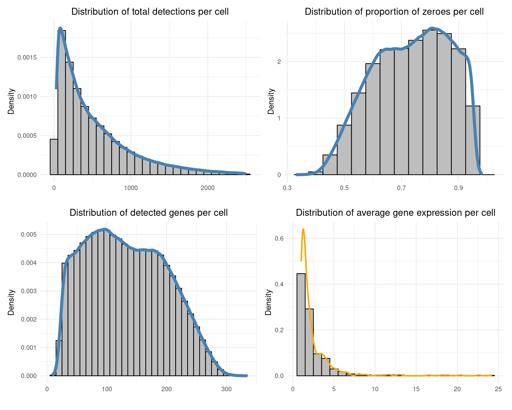
The plots show that most cells have relatively low total detection counts, with a long right tail corresponding to transcriptionally rich cells. The proportion of zero entries per cell peaks around 70–80% and the number of detected genes per cell displays a broad unimodal distribution. The average expression per cell is right-skewed, with a small subset of cells showing high mean transcript abundance.
Negative control coordinates
This section inspects negative control probes (“blank genes”) to assess nonspecific hybridization and technical background. The first plot visualizes their spatial distribution across the tissue, and the second quantifies per-probe detection counts.
The barplot reveals variation in detection counts among blank probes, but overall counts remain low relative to endogenous transcripts.
real_genes <- row.names(se)
nc_coords <- transcript_df[!(transcript_df$gene %in% real_genes), ]
cat("#negative controls", length(unique((nc_coords$gene))), "\n")#negative controls 50 nc_tb <- as.data.frame(sort(table(nc_coords$feature_name),
decreasing = TRUE))
colnames(nc_tb) <- c("name","value_count")
nc_coords$feature_name <- nc_coords$gene
nc_coords$feature_name <-factor(nc_coords$feature_name, levels = nc_tb$name)
ggplot(nc_tb, aes(x = name, y = value_count)) +
geom_bar(stat = "identity") +
#geom_text(aes(label = value_count), vjust = -0.5, size =1.5) +
scale_y_continuous(expand = c(0,1), limits = c(0, 155000))+
labs(title = " ", x = " ", y = "Number of total detections") +
theme_bw()+
defined_theme+
theme(axis.text.x= element_text(size=10,vjust=0.5,hjust = 1, angle = 90),
axis.text.y=element_text(size=10))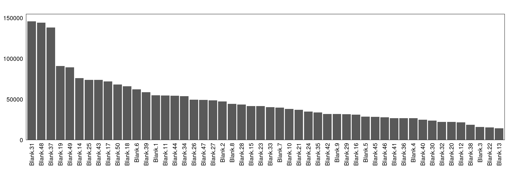
Spatial patterns of blank genes
The spatial heatmap shows that blank probe detections are uniformly distributed with no spatial clustering, indicating minimal spatial artefacts or region-specific nonspecific binding
ggplot(nc_coords, aes(x=x, y=y))+
geom_hex(bins=auto_hex_bin(n=nrow(nc_coords)))+
theme_bw()+
scale_fill_gradient(low="white", high="maroon4") +
ggtitle("Blank genes detections")+
defined_theme+
theme(legend.position = "top",
plot.title = element_text(size=rel(1.3)),
aspect.ratio = 10/12)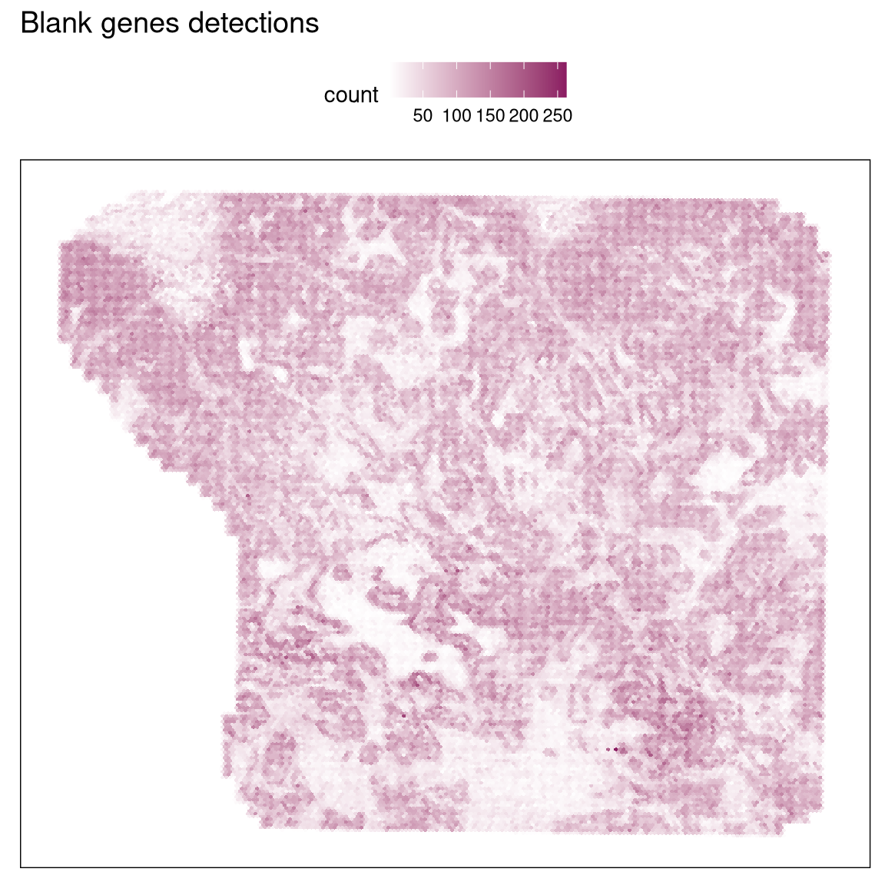
Banksy clustering
We performed spatially informed clustering using Banksy, which integrates gene expression profiles with local spatial context through adaptive geometric features (k = 15, λ = 0.2). Clustering was performed at a resolution of 0.5, providing 10 clusters in total.
seu <- as.Seurat(se, data = NULL)
seu <- NormalizeData(seu, normalization.method = "LogNormalize")
seu <- FindVariableFeatures(seu, nfeatures = nrow(seu))
# copy log-normalized data back to se
aname <- "logcounts"
logcounts_mat <- GetAssayData(seu, slot = "data")[, colnames(se)]
assay(se, aname, withDimnames = FALSE) <- logcounts_mat
lambda <- 0.2
k_geom <- 15
use_agf <- TRUE
se <- computeBanksy(se, assay_name = aname,
compute_agf = TRUE, k_geom = k_geom)
se <- runBanksyPCA(se, use_agf = use_agf, lambda = lambda, seed = 1000)
se <- runBanksyUMAP(se, use_agf = use_agf, lambda = lambda, seed = 1000)
cat("Clustering starts\n")
se <- clusterBanksy(se, use_agf = use_agf, lambda = lambda,
resolution = c(0.5, 0.8), seed = 1000)
se <- connectClusters(se)
cluster_info <- data.frame(
x = spatialCoords(se)[, 1],
y = spatialCoords(se)[, 2],
cell_id = colnames(se),
cluster = paste0("c", colData(se)$clust_M1_lam0.2_k50_res0.5),
sample ="sample01"
)
cluster_info$cluster = factor(cluster_info$cluster,
levels = paste0("c",sort(unique(colData(se)$clust_M1_lam0.2_k50_res0.5))))
saveRDS(cluster_info, here(gdata,paste0(data_nm, "_clusters.Rds")))
saveRDS(se, here(gdata,paste0(data_nm, "_se.Rds")))
saveRDS(seu, here(gdata,paste0(data_nm, "_seu.Rds")))# load generated data (see code above for how they were created)
cluster_info = readRDS(here(gdata,paste0(data_nm, "_clusters.Rds")))
cluster_names = paste0("c", 1:10)
seu = readRDS(here(gdata,paste0(data_nm, "_seu.Rds")))
seu <- subset(seu, cells = cluster_info$cell_id)
Idents(seu)=cluster_info$cluster[match(colnames(seu), cluster_info$cell_id)]
Idents(seu) = factor(Idents(seu), levels = cluster_names)
seu$sample = cluster_info$sample[match(colnames(seu), cluster_info$cell_id)]
fig_ratio = cluster_info %>%
group_by(sample) %>%
summarise(
x_range = diff(range(x, na.rm = TRUE)),
y_range = diff(range(y, na.rm = TRUE)),
ratio = y_range / x_range,
.groups = "drop"
) %>% summarise(max_ratio = max(ratio)) %>% pull(max_ratio)ggplot(data = cluster_info,
aes(x = x, y = y, color=cluster))+
geom_point(size=0.0001)+
facet_wrap(~sample)+
theme_classic()+
guides(color=guide_legend(title="", nrow = 2,
override.aes=list(alpha=1, size=6)))+
defined_theme+
theme(aspect.ratio = fig_ratio,
legend.position = "bottom",
strip.text = element_blank())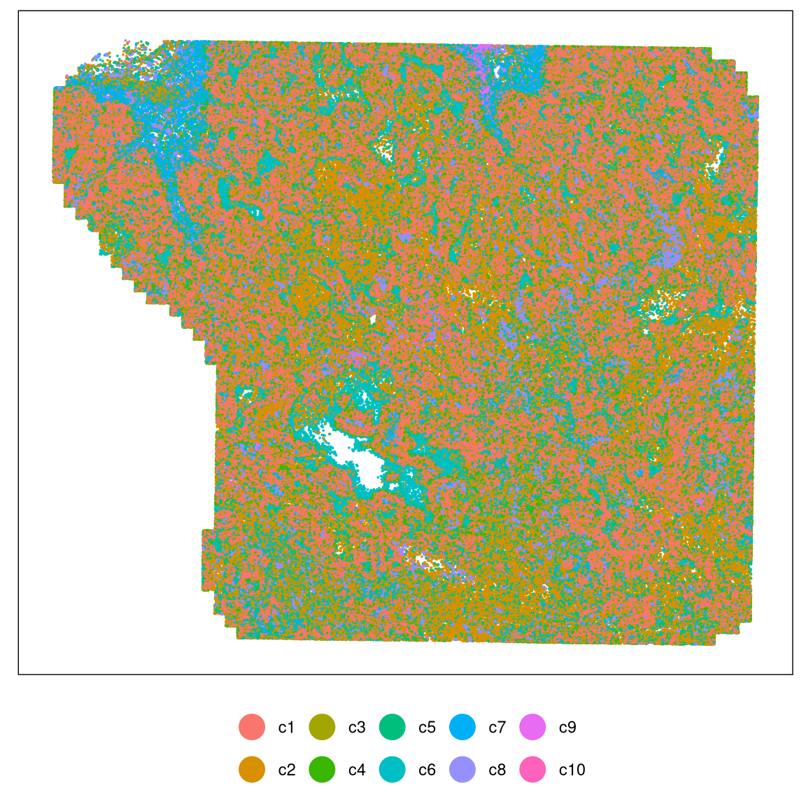
The following figure shows spatial maps of the ten identified Banksy clusters. Each panel displays the spatial localization of a cluster across the tissue section. Clusters c1–c5 form broad contiguous domains that align with morphologically distinct regions, while c6–c10 appear more localized, marking smaller or transitional cell populations. The clear spatial separation between major clusters indicates that Banksy effectively captures structured tissue organization.
ggplot(data = cluster_info,
aes(x = x, y = y))+
geom_hex(bins = 300)+
facet_wrap(~cluster, nrow=4)+
theme_classic()+
scale_fill_gradient(low="grey50", high="red") +
guides(color=guide_legend(title="",override.aes=list(alpha=1, size=8)))+
defined_theme+theme(legend.position = "right",
strip.text = element_text(size=12))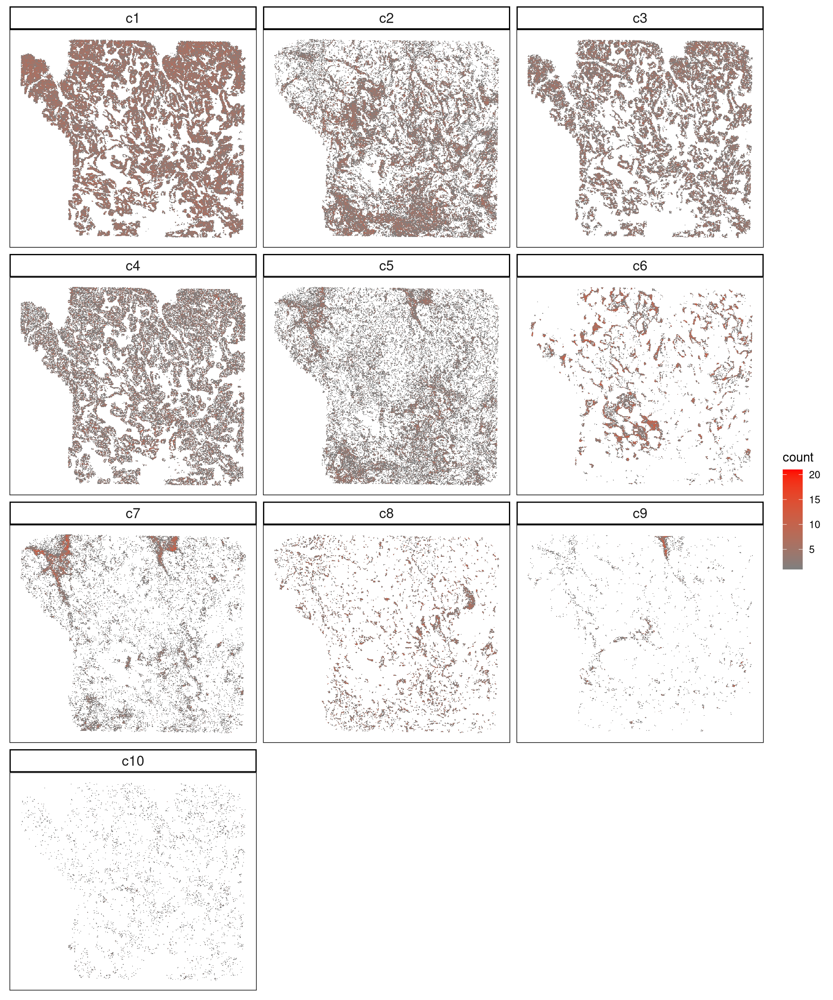
This code summarizes the number of cells assigned to each Banksy cluster at resolution 0.5. The bar chart shows that clusters c1–c4 contain the majority of cells, indicating dominant tissue compartments, while clusters c5–c10 represent progressively smaller populations. The presence of several low-frequency clusters suggests distinct but less abundant spatially localized cell states.
sum_df <- as.data.frame(table(cluster_info$cluster))
colnames(sum_df) = c("cellType","n")
ggplot(sum_df, aes(x = cellType, y = n, fill=n)) +
geom_bar(stat = "identity", position="stack", fill="black") +
geom_text(aes(label = n),size=3,
position = position_dodge(width = 0.9), vjust = -0.5) +
scale_y_continuous(expand = c(0,1), limits=c(0,220000))+
labs(title = " ", x = " ", y = "number of cells", fill="cell type") +
theme_bw()+
theme(legend.position = "none",
axis.text= element_text(size=15,vjust=0.5,hjust = 0.5),
strip.text = element_text(size = rel(1)),
axis.line=element_blank(),
axis.text.y=element_blank(),axis.ticks=element_blank(),
axis.title=element_text(size=12),
panel.background=element_blank(),
panel.grid.major=element_blank(),
panel.grid.minor=element_blank(),
plot.background=element_blank())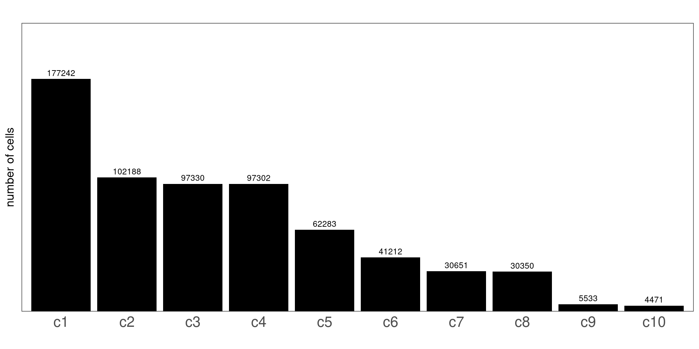
Detect marker genes
jazzPanda
We applied jazzPanda to this dataset using both the linear modelling and correlation-based approaches to detect spatially enriched marker genes across clusters.
Linear modelling approach
We first used the linear modelling approach to identify spatially enriched marker genes. The dataset was converted into spatial gene and cluster vectors using a 50 × 50 square binning strategy. Transcript detections for the negative cotnrol Blank genes were included as the background control. For each gene, a linear model was fitted to estimate its spatial association with relevant cell type patterns.
grid_length =50
hbreast_vector_lst<-get_vectors(x=list("sample01" = transcript_df),
sample_names = "sample01",
cluster_info = cluster_info,
bin_type="square",
bin_param=c(grid_length,grid_length),
test_genes = row.names(se),
n_cores = 5)
### linear modelling approach
nc_names <- unique(nc_coords$feature_name)
nc_coords$sample <- "sample01"
kpt_cols <- c("x","y","feature_name","sample","barcode_id")
nc_coords_mapped = as.data.frame(nc_coords)[,kpt_cols]
nc_vectors <- create_genesets(x=list("sample01" = nc_coords),
sample_names = "sample01",
name_lst=list(blanks=nc_names),
bin_type="square",
bin_param=c(grid_length, grid_length),
cluster_info = NULL)
saveRDS(nc_vectors, "nc_vectors.Rds")
set.seed(589)
cat("Running lasso_markers \n")
jazzPanda_res_lst <- lasso_markers(gene_mt=hbreast_vector_lst$gene_mt,
cluster_mt = hbreast_vector_lst$cluster_mt,
sample_names=c("sample01"),
keep_positive=TRUE,
background=nc_vectors,
n_fold = 10)
saveRDS(hbreast_vector_lst, here(gdata,paste0(data_nm, "_sq50_vector_lst.Rds")))
saveRDS(jazzPanda_res_lst, here(gdata,paste0(data_nm, "_jazzPanda_res_lst.Rds")))We then used get_top_mg to extract unique marker genes
for each cluster based on a coefficient cutoff of 0.1. This function
returns the top spatially enriched genes that are most specific to each
cluster. In contrast, if shared marker genes across clusters are of
interest, all significant genes can be retrieved using
get_full_mg.
# load from saved objects
jazzPanda_res_lst = readRDS(here(gdata,paste0(data_nm, "_jazzPanda_res_lst.Rds")))
sv_lst = readRDS(here(gdata,paste0(data_nm, "_sq50_vector_lst.Rds")))
nbins = 2500
jazzPanda_res = get_top_mg(jazzPanda_res_lst, coef_cutoff=0.1) Cluster to cluster correlation
The heatmap shows several strongly correlated clusters, notably c1–c3–c4, suggesting they represent transcriptionally related epithelial compartments. In contrast, clusters such as c2 and c7–c9 display weak or negative correlations with others, indicating distinct expression profiles.
cluster_mtt = sv_lst$cluster_mt
cluster_mtt = cluster_mtt[,cluster_names]
cor_M_cluster = cor(cluster_mtt,cluster_mtt,method = "pearson")
col <- colorRampPalette(c("#4477AA", "#77AADD", "#FFFFFF","#EE9988", "#BB4444"))
corrplot(
cor_M_cluster,
method = "color",
col = col(200),
diag = TRUE,
addCoef.col = "black",
type = "upper",
tl.col = "black",
tl.cex = 1,
number.cex = 0.8,
tl.srt = 0,
mar = c(0, 0, 3, 0),
sig.level = 0.05,
insig = "blank",
title = "cluster–cluster correlation",
cex.main = 1.2
)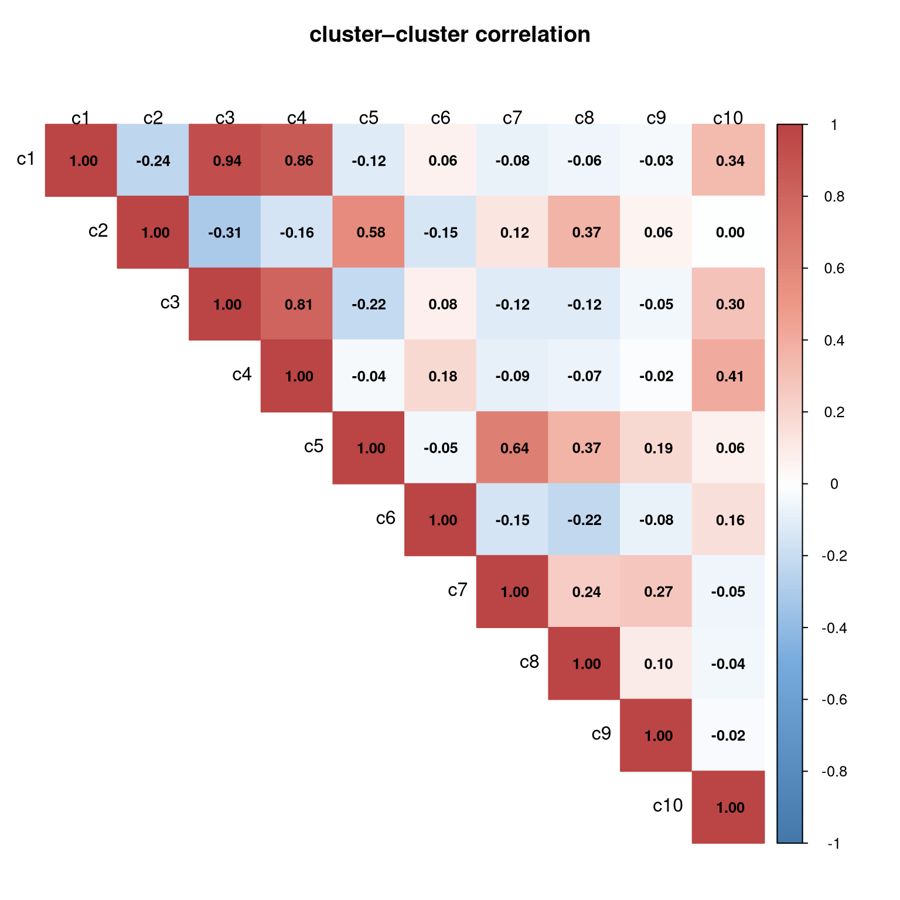
We can plot the top 10 spatial marker genes per cluster identified by the linear modelling approach.
glm_mg = jazzPanda_res[jazzPanda_res$top_cluster != "NoSig", ]
glm_mg$top_cluster = factor(glm_mg$top_cluster, levels = cluster_names)
top_mg_glm <- glm_mg %>%
group_by(top_cluster) %>%
arrange(desc(glm_coef), .by_group = TRUE) %>%
slice_max(order_by = glm_coef, n = 10) %>%
select(top_cluster, gene, glm_coef)
p1<-DotPlot(seu, features = top_mg_glm$gene) +
scale_colour_gradient(low = "white", high = "red") +
coord_flip()+
theme(axis.text.x = element_text(angle = 45, hjust = 1, vjust = 1))+
labs(title = "Top 10 marker genes (jazzPanda-glm)", x="", y="")
p1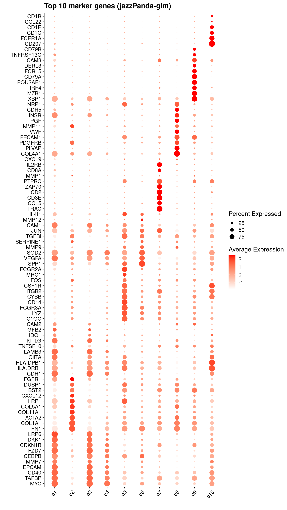
Top3 marker genes by jazzPanda_glm
We visualized the top three marker genes identified by the linear modelling approach for each cluster. For each selected gene, its spatial transcript locations were plotted alongside the corresponding cluster map. Across clusters, the spatial expression patterns of marker genes closely match the distribution of their associated cell types
for (cl in cluster_names){
inters=jazzPanda_res[jazzPanda_res$top_cluster==cl,"gene"]
rounded_val=signif(as.numeric(jazzPanda_res[inters,"glm_coef"]),
digits = 3)
inters_df = as.data.frame(cbind(gene=inters, value=rounded_val))
inters_df$value = as.numeric(inters_df$value)
inters_df=inters_df[order(inters_df$value, decreasing = TRUE),]
inters_df$text= paste(inters_df$gene,inters_df$value,sep=": ")
if (length(inters > 0)){
inters_df = inters_df[1:min(3, nrow(inters_df)),]
inters = inters_df$gene
iters_sp1= transcript_df$feature_name %in% inters
vis_r1 =transcript_df[iters_sp1,
c("x","y","feature_name")]
vis_r1$value = inters_df[match(vis_r1$feature_name,inters_df$gene),
"value"]
vis_r1=vis_r1[order(vis_r1$value,decreasing = TRUE),]
vis_r1$text_label= paste(vis_r1$feature_name,
vis_r1$value,sep=": ")
vis_r1$text_label=factor(vis_r1$text_label, levels=inters_df$text)
vis_r1 = vis_r1[order(vis_r1$text_label),]
genes_plt <- plot_top3_genes(vis_df=vis_r1, fig_ratio=fig_ratio)
cluster_data = cluster_info[cluster_info$cluster==cl, ]
cl_pt<- ggplot(data =cluster_data,
aes(x = x, y = y, color=sample))+
geom_point(size=0.01)+
facet_wrap(~cluster, nrow=1,strip.position = "left")+
scale_color_manual(values = c("black"))+
defined_theme +
theme(legend.position = "none",
strip.background = element_blank(),
aspect.ratio = fig_ratio,
legend.key.width = unit(15, "cm"),
strip.text = element_text(size = rel(1.3)))
layout_design <- (wrap_plots(cl_pt, ncol = 1) | genes_plt) +
plot_layout(widths = c(1, 3), heights = c(1))
print(layout_design)
}
}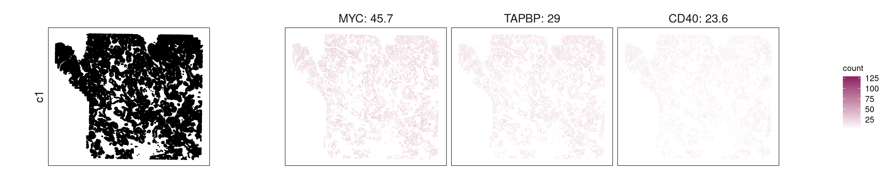
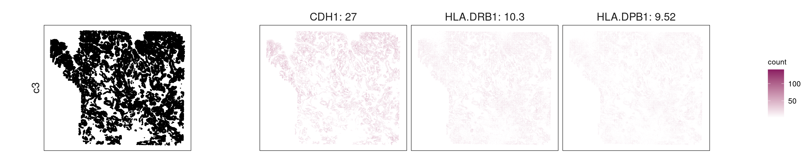
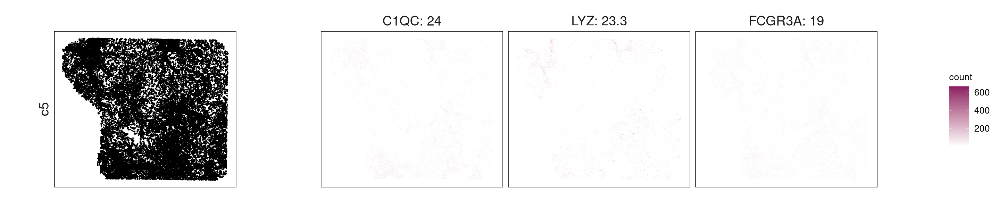
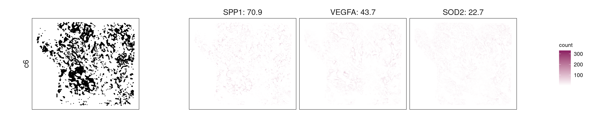
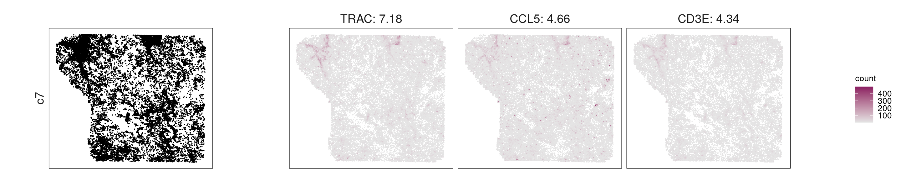
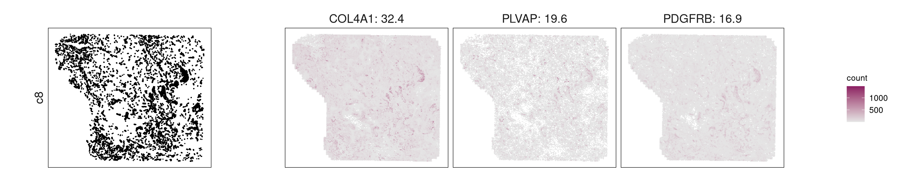

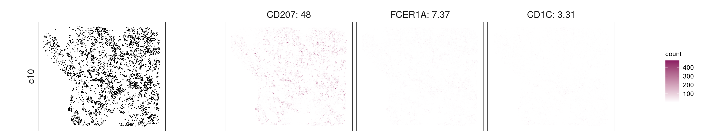
Cluster vector versus marker gene vector
We visualized the top three marker genes (linear modelling approach) for each cluster by plotting their spatial gene vectors against the corresponding cluster vector. Each scatter plot shows how strongly each marker gene’s spatial pattern aligns with the overall spatial signal of its cluster, allowing assessment of both marker specificity and coherence with spatial domains.
Most top marker genes show strong positive correlations with their cluster vectors, confirming spatial alignment between gene expression and cluster structure. For example, MYC, TAPBP, and CD40 (c1) display clear linear trends, reflecting high spatial coherence within the tumor region. Similarly, COL1A1 and ACTA2 (c2) exhibit broad, continuous gradients consistent with fibroblast-rich zones. Immune-related markers such as TRAC, CD3E, and CCL5 (c7) show distinct yet compact distributions, characteristic of localized immune niches.
plot_lst=list()
for (cl in cluster_names){
# ct_nm = anno_df[anno_df$cluster==cl, "anno_name"]
inters_df=jazzPanda_res[jazzPanda_res$top_cluster==cl,]
if (nrow(inters_df) >0){
inters_df=inters_df[order(inters_df$glm_coef, decreasing = TRUE),]
inters_df = inters_df[1:min(3, nrow(inters_df)),]
mk_genes = inters_df$gene
dff = as.data.frame(cbind(sv_lst$cluster_mt[,cl],
sv_lst$gene_mt[,mk_genes]))
colnames(dff) = c("cluster", mk_genes)
dff$vector_id = c(1:nbins)
long_df <- dff %>%
tidyr::pivot_longer(cols = -c(cluster, vector_id), names_to = "gene",
values_to = "vector_count")
long_df$gene = factor(long_df$gene, levels=mk_genes)
p<-ggplot(long_df, aes(x = cluster, y = vector_count, color=gene )) +
geom_point(size=0.01) +
facet_wrap(~gene, scales="free_y", nrow=1) +
labs(x = paste(cl," cluster vector ", sep=""),
y = "Top3 marker gene vector") +
theme_minimal()+
scale_y_continuous(expand = c(0.01,0.01))+
scale_x_continuous(expand = c(0.01,0.01))+
theme(panel.grid = element_blank(),legend.position = "none",
strip.text = element_text(size = 12),
axis.line=element_blank(),
axis.text=element_text(size = 11),
axis.ticks=element_line(color="black"),
axis.title=element_text(size = 12),
panel.border =element_rect(colour = "black",
fill=NA, linewidth=0.5)
)
if (length(mk_genes) == 2) {
p <- (p | plot_spacer()) +
plot_layout(widths = c(2, 1))
} else if (length(mk_genes) == 1) {
p <- (p | plot_spacer() | plot_spacer()) +
plot_layout(widths = c(1, 1, 1))
}
plot_lst[[cl]] = p
}
}
combined_plot <- wrap_plots(plot_lst, ncol = 2)
combined_plot 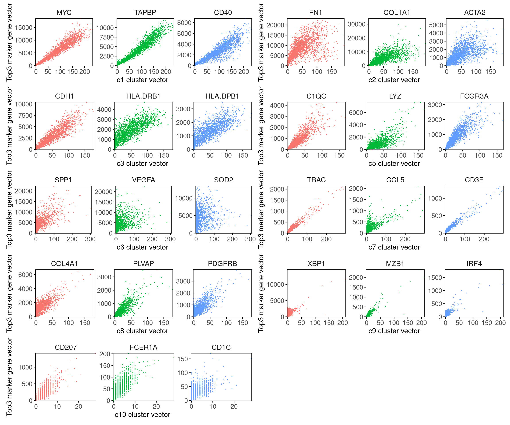
| Version | Author | Date |
|---|---|---|
| ae17c0e | Melody | 2026-01-22 |
Marker gene summary per cluster
c1: High MYC, EPCAM, ERBB2, and FOXM1 indicate proliferative tumor epithelium with active oncogenic and stress-response signaling.
c2: Strong FN1, COL1A1, ACTA2, and TGFBR2 expression indicates matrix-remodeling and fibroblast activation typical of CAFs.
c3: CDH1, HLA-DRB1, and CIITA indicate epithelial cells with antigen-presentation and partial EMT features.
c4: No clear markers detected, suggesting a mixed or boundary region with low transcriptional contrast.
c5: C1QC, LYZ, FCGR3A, and MRC1 indicate macrophages with an M2-like immunosuppressive phenotype.
c6: SPP1, VEGFA, and SOD2 indicate hypoxia-responsive, pro-angiogenic, and ECM-remodeling activity.
c7: TRAC, CD3E, CD8A, and CCL5 indicate T cells with mixed cytotoxic and regulatory signatures.
c8: COL4A1, PECAM1, PDGFRB, and VWF indicate vascular endothelial and perivascular stromal identity.
c9: XBP1, MZB1, IRF4, and CD79A indicate antibody-secreting plasma cells.
c10: CD207, FCER1A, and CD1C indicate antigen-presenting dendritic cells involved in immune surveillance.
## linear modelling
output_data <- do.call(rbind, lapply(cluster_names, function(cl) {
subset <- jazzPanda_res[jazzPanda_res$top_cluster == cl, ]
sorted_subset <- subset[order(-subset$glm_coef), ]
if (length(sorted_subset) == 0){
return(data.frame(Cluster = cl, Genes = " "))
}
if (cl != "NoSig"){
gene_list <- paste(sorted_subset$gene, "(", round(sorted_subset$glm_coef, 2), ")", sep="", collapse=", ")
}else{
gene_list <- paste(sorted_subset$gene, "", sep="", collapse=", ")
}
return(data.frame(Cluster = cl, Genes = gene_list))
}))
knitr::kable(
output_data,
caption = "Detected marker genes for each cluster by linear modelling approach in jazzPanda, in decreasing value of glm coefficients"
)| Cluster | Genes |
|---|---|
| c1 | MYC(45.66), TAPBP(29), CD40(23.64), EPCAM(18.03), MMP7(15.08), CEBPB(14.42), FZD7(12.88), CDKN1B(12.34), DKK1(12.06), LRP6(11.86), PTK2(11.39), STAT6(9.03), SOX9(8.76), FOXM1(8.69), IFNGR1(8.68), ERBB2(8.43), TP53(8.28), NFE2L2(8.16), JUNB(8.13), EPHB3(7.81), BRD4(7.57), CDK4(7.42), MCM2(7.32), MYBL2(7.29), FGFR2(7.28), CREBBP(7.08), PCNA(6.69), ERBB3(6.01), EPHB4(5.79), NFKB1(5.65), CXCL10(5.3), KRAS(5.25), NFKBIA(5.22), SMO(4.98), STAT3(4.89), SRPRB(4.73), IFNGR2(4.69), DIABLO(4.66), SMARCA4(3.95), SHARPIN(3.86), ICOSLG(3.78), LGR5(3.59), TCF7L2(3.55), SMAD2(3.4), CEACAM1(3.12), ATR(2.73), RAF1(2.66), BAX(2.55), SRC(2.33), MLH1(2.26), CCNB1(2.26), IRS1(2.25), LRP5(2.22), CDK2(2.14), IRF3(2.1), PRKCA(2.1), SOX2(2.05), IKBKB(2.04), BRAF(2.01), NF1(1.95), CX3CL1(1.82), MSH3(1.79), APC(1.78), CHEK2(1.51), TBX3(1.47), KIT(1.41), AMOTL2(1.31), CASP8(1.25), RET(1.22), DNMT1(1.07), SLC13A3(1.05), CCNE1(0.96), IFNAR2(0.9), AKT2(0.81), RGMB(0.76), WNT3(0.56), ARAF(0.53), PROX1(0.51), ATM(0.45), ARG1(0.36), CSF2(0.35), PKIB(0.33), CD160(0.25), FGF2(0.24) |
| c2 | FN1(79.49), COL1A1(51.85), ACTA2(10.65), COL11A1(9.79), COL5A1(8.87), LRP1(5.77), CXCL12(3.78), BST2(3.45), DUSP1(2.93), FGFR1(2.55), TNC(2.32), CSF1(2.21), CCND1(2.1), PDGFRA(2.03), CDKN1A(1.97), TGFBR2(1.89), LOX(1.17), TEAD1(1.01), IFITM1(0.98), SMOC2(0.96), PDPN(0.81), COL6A3(0.76), MFAP5(0.71), FGF1(0.6), VEGFC(0.6), CMKLR1(0.57), MMP2(0.47), ELN(0.38), NCAM1(0.32), TWIST1(0.2) |
| c3 | CDH1(26.98), HLA.DRB1(10.33), HLA.DPB1(9.52), CIITA(8.38), LAMB3(7.17), TNFSF10(4.36), KITLG(3.66), IDO1(3.17), TGFB2(2.9), ICAM2(2.2), SNAI1(1.57), MET(1.28), PTEN(0.93), CD177(0.36), TMEM59(0.32) |
| c4 | () |
| c5 | C1QC(24.02), LYZ(23.33), FCGR3A(19.04), CD14(15.38), CYBB(11.97), ITGB2(7.74), CSF1R(7.7), FOS(7.64), MRC1(5.67), FCGR2A(4.79), CCL2(4.2), CCR1(4.03), SERPINA1(3.65), CD4(3.53), MAFB(3.28), LGALS9(3.25), CD163(3.23), PDK4(3.14), FBLN1(2.77), MSR1(2.65), HAVCR2(2.26), CD209(1.99), HLA.DPA1(1.8), TLR2(1.79), CD86(1.45), CCL8(1.39), SIGLEC1(1.32), TREM2(1.21), TLR1(1.2), CSF3R(0.92), VSIR(0.91), CSF2RA(0.78), LGR6(0.67), CCR2(0.51), CLEC4C(0.42), CD80(0.37), CX3CR1(0.36), IRF5(0.33), CXCL2(0.25) |
| c6 | SPP1(70.89), VEGFA(43.68), SOD2(22.66), MMP9(7.88), SERPINE1(6.39), TGFBI(6.28), JUN(5.84), ICAM1(4.3), MMP12(3.68), IL4I1(2.88), CXCL8(2.46), PDK1(2.35), LDHA(2.12), ATF3(1.96), SOCS3(1.42), ITGAX(0.93), CXCL16(0.9), PLOD2(0.84), IL6(0.75), MARCO(0.65), PTGS2(0.63), S100A9(0.44), CCL3(0.38), MUC1(0.38), CA9(0.33), CXCL5(0.24), CD22(0.18), CCL7(0.11) |
| c7 | TRAC(7.18), CCL5(4.66), CD3E(4.34), CD2(3.74), ZAP70(3.18), PTPRC(3.16), MMP1(3.15), CD8A(2.87), IL2RB(2.58), CXCL9(2.29), CCR7(2.11), CD5(1.97), GPX3(1.79), CD3D(1.68), GZMA(1.55), ITGA4(1.43), LAMP3(1.35), ITK(1.32), TIGIT(1.29), GNLY(1.21), CCR4(1.18), STAT4(1.13), TRBC1(1.13), GATA3(1.1), KLRK1(1.08), CTSW(1.04), STAT5A(0.98), FOXP3(0.96), STING1(0.96), GZMK(0.89), CD28(0.89), NKG7(0.89), SELL(0.86), CXCR3(0.79), CD27(0.72), CCR5(0.64), KLRG1(0.64), CXCR6(0.63), CD3G(0.63), EOMES(0.6), KLF2(0.57), PDCD1LG2(0.53), TBX21(0.5), TRAT1(0.45), CD40LG(0.44), SELPLG(0.43), ICOS(0.37), NLRC5(0.36), GZMH(0.35), PDCD1(0.33), LAG3(0.32), PRF1(0.31), CCL4(0.28), KLRB1(0.26), FASLG(0.26), CXCL11(0.23), CD226(0.22), CXCR5(0.18) |
| c8 | COL4A1(32.39), PLVAP(19.59), PDGFRB(16.87), PECAM1(15.37), VWF(12.14), MMP11(10.92), PGF(6.9), INSR(6.72), CDH5(6.28), NRP1(5.3), TGFB3(5.15), ENG(5.11), KDR(4.66), NOTCH1(4.56), PDGFB(4.08), CD248(4.01), WWTR1(3.89), ANGPT2(3.89), MMRN2(3.67), TGFB1(3.48), CAV1(3.3), NDUFA4L2(3.2), BMP1(2.94), ZEB1(2.78), ACKR3(2.69), SNAI2(2.64), ITGA1(2.4), FLT4(2.39), CLEC14A(2.08), CLDN5(1.71), PREX2(1.12), FLT1(1.02), TNFRSF4(0.96), NOS3(0.86), IL3RA(0.63), ANGPT1(0.4), PAX5(0.29), DUSP6(0.28), HGF(0.28), LEF1(0.23), TEK(0.2), CD68(0.15) |
| c9 | XBP1(53.96), MZB1(10.63), IRF4(7.47), POU2AF1(6.65), CD79A(6.41), FCRL5(5.16), DERL3(3.59), ICAM3(2.4), TNFRSF13C(1.38), CD79B(1.1), MS4A1(0.96), GZMB(0.73), CTSG(0.52), CD19(0.45), STAP1(0.37), BLK(0.35), XCR1(0.18) |
| c10 | CD207(47.96), FCER1A(7.37), CD1C(3.31), CD1E(2.29), CCL22(2.1), CD1B(0.85) |
Correlation approach
We next applied the correlation-based method using the same 50 × 50 binning strategy. This approach highlights genes whose spatial patterns are highly correlated with specific cell type domains.
grid_length = 50
all_genes_names = row.names(se)
cat("Running compute_permp \n")
seed_number<-589
set.seed(seed_number)
perm_p <- compute_permp(x=list("sample01" = transcript_df),
cluster_info=cluster_info,
perm.size=5000,
bin_type="square",
bin_param=c(grid_length,grid_length),
test_genes=all_genes_names,
correlation_method = "spearman",
n_cores=5,
correction_method="BH")
saveRDS(perm_p, here(gdata,paste0(data_nm, "_perm_lst.Rds")))We can get the correlation between every gene and cluster using the
get_cor function, which quantifies how strongly each gene’s
spatial expression pattern aligns with the spatial distribution of each
cluster.
To assess statistical significance, permutation testing results are
retrieved from the saved perm_lst object. The corresponding raw p-values
can be obtained with get_perm_p, and the
multiple-testing–adjusted p-values with get_perm_adjp.
These adjusted p-values help identify genes that are significantly
associated with specific spatial domains after controlling for random
spatial correlations.
# load from saved objects
perm_lst = readRDS(here(gdata,paste0(data_nm, "_perm_lst.Rds")))
perm_res = get_perm_adjp(perm_lst)
obs_corr = get_cor(perm_lst)The follwoing figure shows the top 10 marker genes per cluster detected by the correlation-based approach. Distinct expression peaks are evident across clusters: c1 and c2 display strong, localized expression of structural and signaling genes; c5 shows broad enrichment of macrophage-associated markers; c7 exhibits a concentrated signal for T-cell–related genes (TRAC, CD3E, GZMA); and c8–c9 show tight, cluster-specific expression consistent with vascular and plasma cell domains. In contrast, c3, c4, and c6 display weaker or more diffuse profiles, suggesting less pronounced cluster-specific transcription.
top_mg_corr <- data.frame(cluster = character(),
gene = character(),
corr = numeric(),
stringsAsFactors = FALSE)
for (cl in cluster_names) {
obs_cutoff <- quantile(obs_corr[, cl], 0.75, na.rm = TRUE)
perm_cl <- intersect(
rownames(perm_res[perm_res[, cl] < 0.05, ]),
rownames(obs_corr[obs_corr[, cl] > obs_cutoff, ])
)
if (length(perm_cl) > 0) {
selected_rows <- obs_corr[perm_cl, , drop = FALSE]
ord <- order(selected_rows[, cl], decreasing = TRUE,
na.last = NA)
top_genes <- head(rownames(selected_rows)[ord], 5)
top_vals <- head(selected_rows[ord, cl], 5)
top_mg_corr <- rbind(
top_mg_corr,
data.frame(cluster = rep(cl, length(top_genes)),
gene = top_genes,
corr = top_vals,
stringsAsFactors = FALSE)
)
}
}
p1<-DotPlot(seu, features = unique(top_mg_corr$gene)) +
scale_colour_gradient(low = "white", high = "red") +
coord_flip()+
theme(axis.text.x = element_text(angle = 45, hjust = 1, vjust = 1))+
labs(title = "Top 10 marker genes (jazzPanda-correlation)",
x="", y="")
p1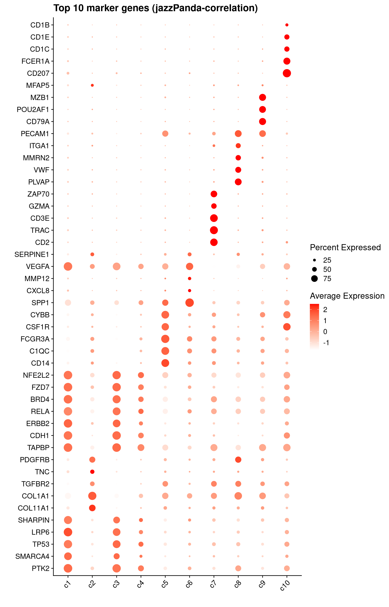
| Version | Author | Date |
|---|---|---|
| ae17c0e | Melody | 2026-01-22 |
Top3 marker genes by jazzPanda_correlation
For each cluster, the top three genes with the highest significant correlations were visualized alongside the spatial cluster map.
The spatial expression patterns of these marker genes closely align with the distribution of their associated clusters, confirming that the correlation approach captures coherent spatial co-localization between genes and cell-type domains.
for (cl in cluster_names){
#ct_nm = anno_df[anno_df$cluster==cl, "anno_name"]
obs_cutoff = quantile(obs_corr[, cl], 0.75)
perm_cl<-intersect(row.names(perm_res[perm_res[,cl]<0.05,]),
row.names(obs_corr[obs_corr[, cl]>obs_cutoff,]))
inters<-perm_cl
if (length(inters > 0)){
rounded_val<-signif(as.numeric(obs_corr[inters,cl]), digits = 3)
inters_df = as.data.frame(cbind(gene=inters, value=rounded_val))
inters_df$value = as.numeric(inters_df$value)
inters_df<-inters_df[order(inters_df$value, decreasing = TRUE),]
inters_df = inters_df[1:min(3, nrow(inters_df)),]
inters_df$text= paste(inters_df$gene,inters_df$value,sep=": ")
inters = inters_df$gene
iters_sp1= transcript_df$feature_name %in% inters
vis_r1 =transcript_df[iters_sp1,
c("x","y","feature_name")]
vis_r1$value = inters_df[match(vis_r1$feature_name,inters_df$gene),
"value"]
vis_r1=vis_r1[order(vis_r1$value,decreasing = TRUE),]
vis_r1$text_label= paste(vis_r1$feature_name,
vis_r1$value,sep=": ")
vis_r1$text_label=factor(vis_r1$text_label, levels=inters_df$text)
vis_r1 = vis_r1[order(vis_r1$text_label),]
genes_plt <- plot_top3_genes(vis_df=vis_r1, fig_ratio=fig_ratio)
cluster_data = cluster_info[cluster_info$cluster==cl, ]
cl_pt<- ggplot(data =cluster_data,
aes(x = x, y = y, color=sample))+
#geom_hex(bins = 100)+
geom_point(size=0.01)+
facet_wrap(~cluster, nrow=1,strip.position = "left")+
scale_color_manual(values = c("black"))+
defined_theme + theme(legend.position = "none",
strip.background = element_blank(),
aspect.ratio = fig_ratio,
legend.key.width = unit(15, "cm"),
strip.text = element_text(size = rel(1.3)))
layout_design <- (wrap_plots(cl_pt, ncol = 1) | genes_plt) +
plot_layout(widths = c(1, 3), heights = c(1))
print(layout_design)
}
}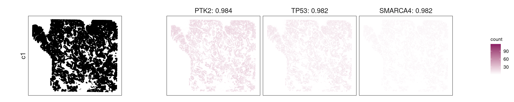
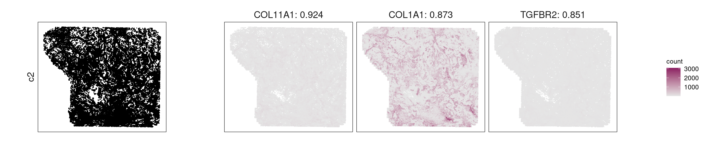
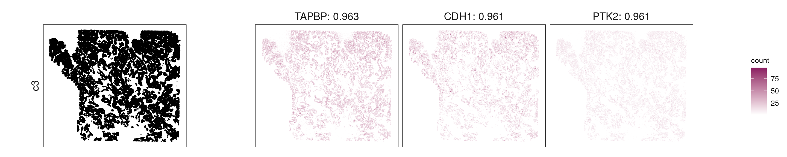
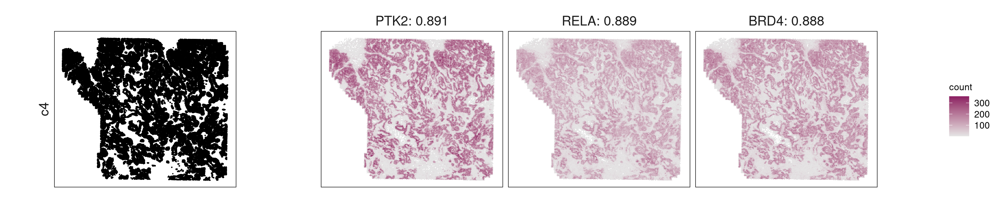
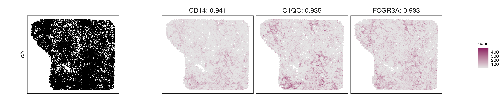
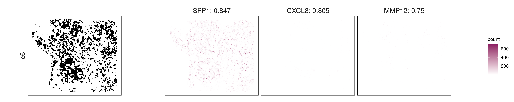
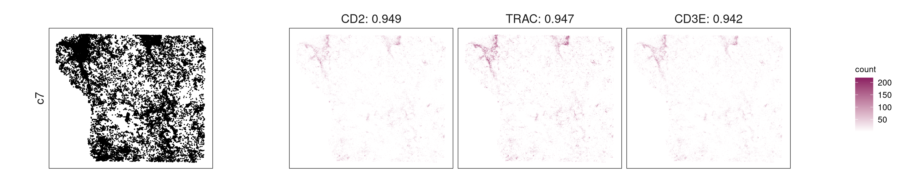
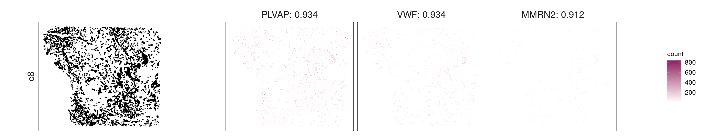
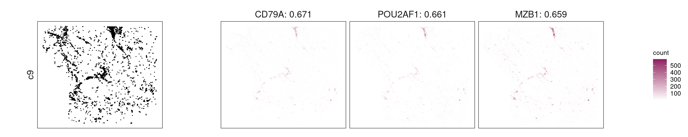
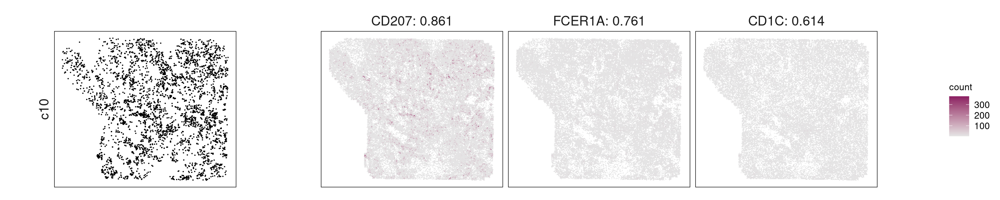
Cluster vector versus marker gene vector
Clusters c1–c3 exhibit very tight correlations, reflecting highly coherent spatial domains with clear gene–cluster alignment. c5 and c7 also show strong, compact relationships. c8 and c9 display moderately dispersed but still positive trends, suggesting more spatially heterogeneous yet well-defined vascular and plasma cell domains. c6 and c10 show slightly broader scatter, consistent with more diffuse or gradient-like spatial expression.
plot_lst=list()
for (cl in cluster_names){
#ct_nm = anno_df[anno_df$cluster==cl, "anno_name"]
obs_cutoff = quantile(obs_corr[, cl], 0.75)
perm_cl<-intersect(row.names(perm_res[perm_res[,cl]<0.05,]),
row.names(obs_corr[obs_corr[, cl]>obs_cutoff,]))
inters<-perm_cl
if (length(inters) >0){
rounded_val<-signif(as.numeric(obs_corr[inters,cl]), digits = 3)
inters_df = as.data.frame(cbind(gene=inters, value=rounded_val))
inters_df$value = as.numeric(inters_df$value)
inters_df<-inters_df[order(inters_df$value, decreasing = TRUE),]
inters_df = inters_df[1:min(3, nrow(inters_df)),]
mk_genes = inters_df$gene
dff = as.data.frame(cbind(sv_lst$cluster_mt[,cl],
sv_lst$gene_mt[,mk_genes]))
colnames(dff) = c("cluster", mk_genes)
dff$vector_id = c(1:nbins)
long_df <- dff %>%
tidyr::pivot_longer(cols = -c(cluster, vector_id), names_to = "gene",
values_to = "vector_count")
long_df$gene = factor(long_df$gene, levels=mk_genes)
p<-ggplot(long_df, aes(x = cluster, y = vector_count, color=gene )) +
geom_point(size=0.01) +
facet_wrap(~gene, scales="free_y", nrow=1) +
labs(x = paste(cl, " cluster vector ", sep=""),
y = "Top3 marker gene vector") +
theme_minimal()+
scale_y_continuous(expand = c(0.01,0.01))+
scale_x_continuous(expand = c(0.01,0.01))+
theme(panel.grid = element_blank(),
legend.position = "none",
strip.text = element_text(size = 12),
axis.line=element_blank(),
axis.text=element_text(size = 11),
axis.ticks=element_line(color="black"),
axis.title=element_text(size = 12),
panel.border =element_rect(colour = "black",
fill=NA, linewidth=0.5)
)
if (length(mk_genes) == 2) {
p <- (p | plot_spacer()) +
plot_layout(widths = c(2, 1))
} else if (length(mk_genes) == 1) {
p <- (p | plot_spacer() | plot_spacer()) +
plot_layout(widths = c(1, 1, 1))
}
plot_lst[[cl]] = p
}
}
combined_plot <- wrap_plots(plot_lst, ncol = 2)
combined_plot 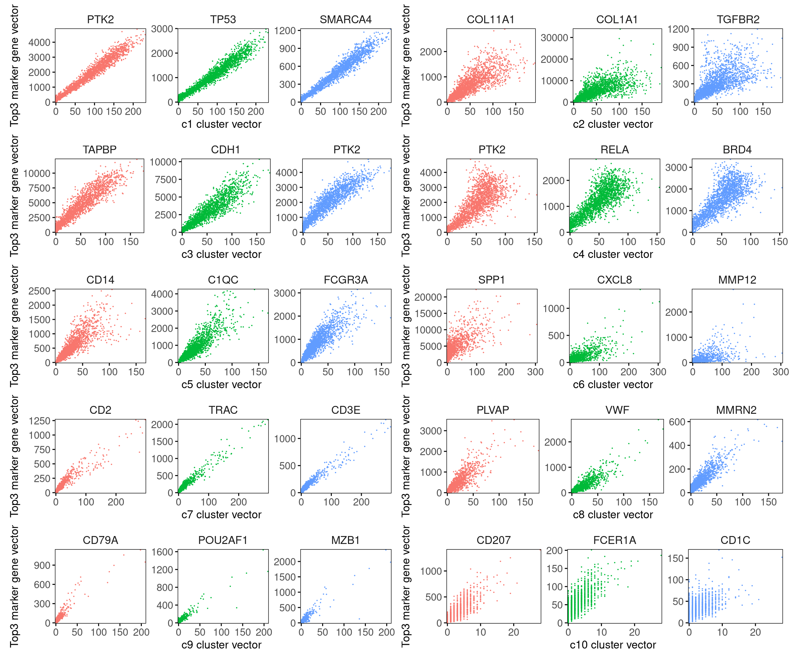
| Version | Author | Date |
|---|---|---|
| ae17c0e | Melody | 2026-01-22 |
Marker gene summary per cluster
In the correlation-based approach, genes were selected based on two criteria: (1) significant permutation p-values and (2) observed correlation values above the 75th percentile for each cluster. The resulting table lists, for each cluster, the genes with the strongest spatial correlation to that cluster’s distribution, ordered by decreasing correlation coefficient.
It is important to inspect and adjust this cutoff as needed — in some cases, the 75th percentile threshold may still fall below 0.1, which could include weakly correlated genes. A higher cutoff can be applied to ensure that only strongly spatially associated genes are retained.
c1: High correlations for MYC, ERBB2, TP53, and EPCAM indicate strong epithelial and proliferative programs consistent with tumor epithelium.
c2: COL11A1, COL1A1, ACTA2, and TGFBR2 show robust ECM and fibroblast activation signatures typical of stromal remodeling.
c3: CDH1, ERBB2, TAPBP, and PTK2 indicate epithelial differentiation with immune-interacting and signaling activity.
c4: Overlap with c1–c3 markers (PTK2, RELA, SMARCA4) suggests an epithelial-like transitional state rather than a distinct compartment.
c5: CD14, C1QC, FCGR3A, and CSF1R highlight macrophage and monocyte identity with strong myeloid polarization.
c6: SPP1, CXCL8, and VEGFA indicate hypoxia-driven and angiogenic activity linked to stress or invasive niches.
c7: CD2, TRAC, CD3E, and GZMA mark T cells with active cytotoxic and regulatory programs.
c8: PLVAP, VWF, PECAM1, and ANGPT2 define endothelial and perivascular zones with strong angiogenic signatures.
c9: CD79A, MZB1, and POU2AF1 indicate antibody-secreting B-lineage cells.
c10: CD207, FCER1A, and CD1C mark dendritic cells with antigen-presentation and immune surveillance functions.
# correlation appraoch
# Combine into a new dataframe for LaTeX output
output_data <- do.call(rbind, lapply(cluster_names, function(cl) {
obs_cutoff = quantile(obs_corr[, cl], 0.75)
perm_cl=intersect(row.names(perm_res[perm_res[,cl]<0.05,]),
row.names(obs_corr[obs_corr[, cl]>obs_cutoff,]))
if (length(perm_cl) == 0){
return(data.frame(Cluster = cl, Genes = " "))
}
sorted_subset = obs_corr[row.names(obs_corr) %in% perm_cl,]
sorted_subset <- sorted_subset[order(-sorted_subset[,cl]), ]
if (cl != "NoSig"){
gene_list <- paste(row.names(sorted_subset), "(", round(sorted_subset[,cl], 2), ")", sep="", collapse=", ")
}else{
gene_list <- paste(row.names(sorted_subset), "", sep="", collapse=", ")
}
return(data.frame(Cluster = cl, Genes = gene_list))
}))
knitr::kable(
output_data,
caption = "Detected marker genes for each cluster by correlation approach in jazzPanda, in decreasing value of observed correlation"
)| Cluster | Genes |
|---|---|
| c1 | PTK2(0.98), SMARCA4(0.98), TP53(0.98), LRP6(0.98), SHARPIN(0.98), ATR(0.98), DIABLO(0.98), TAPBP(0.98), CDKN1B(0.98), CREBBP(0.98), KRAS(0.98), MYC(0.98), CDK4(0.98), ERBB2(0.98), BRD4(0.98), NFE2L2(0.98), MSH6(0.97), SRPRB(0.97), BRAF(0.97), STAT6(0.97), SMAD2(0.97), APC(0.97), STAT3(0.97), PPARD(0.97), CHEK2(0.97), RAF1(0.97), NFKB2(0.97), SMO(0.97), MCM2(0.97), EPHB4(0.97), DKK1(0.97), FZD7(0.97), BAK1(0.97), CASP8(0.97), SRC(0.97), HDAC3(0.97), MSH3(0.97), CDH1(0.97), RELA(0.96), ICOSLG(0.96), CCNE1(0.96), KITLG(0.96), DNMT3A(0.96), NFKB1(0.96), LAMB3(0.96), EZH2(0.96), MSH2(0.96), ERBB3(0.96), CDK2(0.96), RGMB(0.96), DNMT1(0.96), NF1(0.96), MLH1(0.96), IKBKB(0.96), E2F1(0.96), FOXM1(0.96), TBX3(0.96), LRP5(0.96), AKT3(0.96), PMS2(0.96), HDAC1(0.96), TAP2(0.95), IFNGR2(0.95), BMI1(0.95), PCNA(0.95), TAP1(0.95), CDCA7(0.95), VEGFB(0.95), MET(0.95), FGFR2(0.95), CCNB1(0.95), IGF1R(0.95), CD40(0.95), MAML1(0.95), SNAI1(0.95), EPCAM(0.95), BRCA1(0.95), TCF7L2(0.95), PIK3CA(0.95), EPHB3(0.95), BIRC5(0.95), WNT3(0.95), IFNGR1(0.95), MYBL2(0.95), CHEK1(0.95), ARG1(0.94), AMOTL2(0.94), BAX(0.94), IL12A(0.94), VCAM1(0.94), HRAS(0.94), EGFR(0.94), CD160(0.94), BCL2(0.94), AKT2(0.94), CSF2(0.94), TSC1(0.94), CEACAM1(0.94), CD83(0.94), PKM(0.94), AURKA(0.94), SOX9(0.94), CX3CL1(0.94), ARAF(0.94), PLK1(0.94), CIITA(0.94), IFNAR2(0.94), AKT1(0.94), IRS1(0.93), IDH1(0.93), IRF3(0.93), PTEN(0.93), MKI67(0.93), NRAS(0.93), AURKB(0.93), MTOR(0.93), HLA.DMA(0.93), MCM6(0.93), BUB1(0.93), TEAD4(0.93), ATM(0.93), CCND1(0.92), HLA.DRA(0.92), ITGB1(0.92), YAP1(0.92) |
| c2 | COL11A1(0.92), COL1A1(0.87), TGFBR2(0.85), TNC(0.85), PDGFRB(0.85), CXCL12(0.84), COL6A3(0.83), ACTA2(0.83), ZEB1(0.82), NRP1(0.8), PDGFRA(0.8), FGF1(0.79), CD14(0.78), CAV1(0.78), TGFB1(0.78), MMP2(0.77), DUSP1(0.76), COL5A1(0.76), FN1(0.76), CMKLR1(0.76), ELN(0.75), MMP11(0.75), C1QC(0.73), SFRP2(0.73), FAP(0.73), MFAP5(0.73), BST2(0.72), EGR1(0.72), CSF1R(0.71), FCGR3A(0.71), CD248(0.71), MRC1(0.71), PDPN(0.71), FOS(0.7), FCGR2A(0.7), CYBB(0.7), CD163(0.69), NEDD4(0.68), TWIST1(0.68), MAFB(0.68), TGFBI(0.67), CD4(0.67), CSF1(0.65), ITGB2(0.65), GPX3(0.65), PECAM1(0.64), SNAI2(0.64), CD86(0.63), ITGA4(0.62), TLR2(0.61), LRP1(0.61), PTPRC(0.59), MSR1(0.59), CCR1(0.59), VSIR(0.58), THBD(0.58), IFITM1(0.58), CDKN1A(0.57), NCAM1(0.57), CD28(0.57), VWF(0.56), CD209(0.56), FBLN1(0.55), POU2AF1(0.53), PLVAP(0.52), PLOD2(0.52), NDUFA4L2(0.52), IL6(0.52), MMP9(0.47), SERPINE1(0.43) |
| c3 | TAPBP(0.96), PTK2(0.96), CDH1(0.96), ERBB2(0.96), SMARCA4(0.96), CDKN1B(0.96), TP53(0.96), SHARPIN(0.95), FZD7(0.95), LRP6(0.95), MYC(0.95), DIABLO(0.95), SMAD2(0.95), LAMB3(0.95), NFE2L2(0.95), KITLG(0.95), STAT3(0.95), ATR(0.95), SRPRB(0.94), CREBBP(0.94), CDK4(0.94), KRAS(0.94), MSH6(0.94), CASP8(0.94), STAT6(0.94), BRAF(0.94), BRD4(0.94), DKK1(0.94), EPHB4(0.94), MET(0.94), MCM2(0.94), APC(0.94), CHEK2(0.94), PPARD(0.94), BAK1(0.94), RELA(0.94), ERBB3(0.94), AKT3(0.93), SNAI1(0.93), SMO(0.93), SRC(0.93), NFKB2(0.93), MSH2(0.93), CEACAM1(0.93), TBX3(0.93), DNMT3A(0.93), CD40(0.93), EPCAM(0.93), PMS2(0.93), HDAC3(0.93), HDAC1(0.93), CCNE1(0.93), RAF1(0.93), NFKB1(0.93), FGFR2(0.93), IGF1R(0.93), MSH3(0.93), TAP1(0.92), ICOSLG(0.92), TAP2(0.92), EZH2(0.92), VEGFB(0.92), RGMB(0.92), IFNGR2(0.92), FOXM1(0.92), IFNGR1(0.92), LRP5(0.92), E2F1(0.92), CDK2(0.92), VCAM1(0.92), BMI1(0.92), DNMT1(0.92), EPHB3(0.91), IKBKB(0.91), CIITA(0.91), BCL2(0.91), CCNB1(0.91), MLH1(0.91), SOX9(0.91), PCNA(0.91), BRCA1(0.91), CD160(0.91), BIRC5(0.91), EGFR(0.91), NF1(0.91), LAMC2(0.91), AMOTL2(0.91), ARG1(0.91), IRS1(0.91), TCF7L2(0.91), PIK3CA(0.91), CDCA7(0.91), IL12A(0.91), WNT3(0.9), MYBL2(0.9), HLA.DRA(0.9), HRAS(0.9), CHEK1(0.9), MUC1(0.9), CD83(0.9), CX3CL1(0.9), BAX(0.9), SLC13A3(0.9), ARAF(0.9), MAML1(0.9), CSF2(0.9), AURKA(0.9), IDH1(0.9), HLA.DMA(0.9), PTEN(0.9), ICAM1(0.9), PKM(0.9), SOX2(0.9), AKT2(0.9), TSC1(0.89), IFNAR2(0.89), TGFB2(0.89), PLK1(0.89), PKIB(0.89), NRAS(0.89), TEAD4(0.89), MTOR(0.89), BUB1(0.89), MKI67(0.89), AKT1(0.89) |
| c4 | PTK2(0.89), RELA(0.89), BRD4(0.89), FZD7(0.89), NFE2L2(0.89), DIABLO(0.88), LAMB3(0.88), PMS2(0.88), SHARPIN(0.88), SMAD2(0.88), AKT3(0.88), LRP6(0.88), BAK1(0.88), STAT3(0.88), TP53(0.88), NFKB2(0.88), MET(0.88), ERBB2(0.88), SNAI1(0.88), SMARCA4(0.88), MSH6(0.88), CREBBP(0.88), TAPBP(0.88), SRPRB(0.88), KRAS(0.88), MYC(0.88), EGFR(0.88), DKK1(0.88), KITLG(0.88), BRAF(0.88), EPHB4(0.88), SRC(0.88), CDKN1B(0.88), TAP2(0.88), DNMT3A(0.88), CDK4(0.87), MSH2(0.87), ATR(0.87), PPARD(0.87), TBX3(0.87), VCAM1(0.87), IGF1R(0.87), VEGFB(0.87), RAF1(0.87), HDAC3(0.87), TAP1(0.87), CDH1(0.87), SMO(0.87), LAMC2(0.87), TEAD4(0.87), LMNA(0.87), LRP5(0.87), E2F1(0.87), PKM(0.87), IFNGR2(0.87), NFKB1(0.87), APC(0.87), HRAS(0.87), ICOSLG(0.87), CCNE1(0.87), BCL2(0.87), EZH2(0.87), CASP8(0.87), HDAC1(0.87), CHEK2(0.87), SOX9(0.87), IL12A(0.86), MCM2(0.86), CDCA7(0.86), STAT6(0.86), MSH3(0.86), YAP1(0.86), ARG1(0.86), EPHB3(0.86), CD40(0.86), NRAS(0.86), CD83(0.86), FOXM1(0.86), CX3CL1(0.86), BIRC5(0.86), IFNGR1(0.86), RGMB(0.86), CCNB1(0.85), TSC1(0.85), NF1(0.85), PIK3CA(0.85), TNFRSF18(0.85), PLK1(0.85), CSF2(0.85), CHEK1(0.85), DNMT1(0.85), CDK6(0.85), BUB1(0.85), MTOR(0.85), CDK2(0.85), WNT3(0.85), IRS1(0.85), AURKA(0.85), AMOTL2(0.85), EPCAM(0.85), MYBL2(0.85), ERBB3(0.85), HLA.DQA1(0.85), ICAM1(0.85), CD160(0.84), HLA.DRA(0.84), MCM6(0.84), PCNA(0.84), FGFR2(0.84), SOX2(0.84), CIITA(0.84), CEACAM1(0.84), PDK1(0.84), TCF7L2(0.84), BRCA1(0.84) |
| c5 | CD14(0.94), C1QC(0.93), FCGR3A(0.93), CSF1R(0.93), CYBB(0.93), ITGB2(0.92), CD163(0.91), MAFB(0.91), CD4(0.9), FCGR2A(0.9), CD86(0.88), NRP1(0.88), CCR1(0.87), MSR1(0.86), TGFBR2(0.86), PTPRC(0.86), DUSP1(0.85), MRC1(0.85), CSF3R(0.85), TLR2(0.84), LYZ(0.83), HAVCR2(0.83), SERPINA1(0.82), FOS(0.81), VSIR(0.81), TGFB1(0.8), PDGFRA(0.79), PECAM1(0.78), COL1A1(0.78), GPX3(0.77), CMKLR1(0.77), ZEB1(0.75), CD209(0.75), CD28(0.74), ACTA2(0.74), ITGA4(0.74), TREM2(0.74), BST2(0.74), PDGFRB(0.74), THBD(0.74), COL11A1(0.73), CAV1(0.73), SELPLG(0.73), EGR1(0.72), SFRP2(0.72), TNC(0.72), CXCL12(0.71), TGFBI(0.7), CD248(0.7), MMP2(0.7), PDK4(0.69), LRP1(0.69), FAP(0.69), FGF1(0.69), SNAI2(0.68), COL6A3(0.68), CSF1(0.68), NEDD4(0.67), ZAP70(0.66), FBLN1(0.66), ELN(0.66), TWIST1(0.65), ITGAX(0.65), CCR2(0.65), LGR6(0.65), HGF(0.64), ITK(0.64), PDPN(0.64), GZMA(0.63), CD2(0.63), VWF(0.63), CD3G(0.62), CDKN1A(0.62), MFAP5(0.62), COL5A1(0.62), TRBC1(0.62), ITGA1(0.61), FN1(0.61), MMP11(0.6), CLEC14A(0.59), IFITM1(0.59), CLDN5(0.58), CCL8(0.57), ASCL2(0.57), POU2AF1(0.57), MMRN2(0.57), PLVAP(0.56), IL6(0.55), MMP9(0.53) |
| c6 | SPP1(0.85), CXCL8(0.8), MMP12(0.75), VEGFA(0.72), SERPINE1(0.56), MARCO(0.55), MMP9(0.5), PLOD2(0.48), TGFBI(0.44), IL6(0.38) |
| c7 | CD2(0.95), TRAC(0.95), CD3E(0.94), GZMA(0.92), ZAP70(0.91), ITK(0.9), CD3D(0.89), IL2RB(0.89), CD3G(0.88), TRBC1(0.88), CD5(0.86), TIGIT(0.85), PTPRC(0.84), NKG7(0.84), CD28(0.83), CCR4(0.83), ITGA4(0.81), CTSW(0.81), CD8A(0.8), TBX21(0.8), PDCD1(0.8), FOXP3(0.79), PDCD1LG2(0.79), CXCR3(0.79), SELPLG(0.78), CCR2(0.78), GZMH(0.78), CD4(0.77), CYBB(0.76), ICOS(0.76), KLRK1(0.76), CCL5(0.75), GPX3(0.75), CCR7(0.74), ENG(0.74), ITGA1(0.74), CCR5(0.73), PECAM1(0.73), STAT5A(0.73), HGF(0.73), CD209(0.73), VSIR(0.73), PRF1(0.72), CMKLR1(0.72), LRP1(0.72), ICAM3(0.72), CD274(0.72), LEF1(0.72), TRAT1(0.71), MMRN2(0.71), CLEC14A(0.71), CSF3R(0.71), CXCL9(0.71), C1QC(0.71), CSF1R(0.71), CLEC4C(0.7), GNLY(0.7), PDK4(0.7), TGFBR2(0.7), CD248(0.7), CSF2RA(0.7), FOS(0.69), SNAI2(0.69), FCGR3A(0.69), AXIN2(0.69), HAVCR2(0.69), PLVAP(0.69), VWF(0.69), THBD(0.68), TNFRSF4(0.68), POU2AF1(0.68), CCL4(0.67), IKZF2(0.67), FAP(0.67), ADAMTS4(0.67), FCGR2A(0.66), MRC1(0.66), MAFB(0.66), LYZ(0.66), TGFBR1(0.66), BST2(0.66), ITGB2(0.66), CDH5(0.66), ANGPT1(0.66), CSF1(0.65), MFAP5(0.65), DES(0.65), CD19(0.65), ZEB1(0.65), CD163(0.65), CD14(0.64), PDGFRA(0.64), SERPINA1(0.64), PDGFB(0.64), CX3CR1(0.64), NRP1(0.64), ACTA2(0.64), FLT4(0.64), SMOC2(0.63), CDKN1A(0.63), TGFB3(0.63), CXCL12(0.63), MMP1(0.63), TREM2(0.63) |
| c8 | PLVAP(0.93), VWF(0.93), MMRN2(0.91), ITGA1(0.89), PECAM1(0.89), ANGPT2(0.89), CLEC14A(0.88), CD248(0.86), PGF(0.84), CDH5(0.83), NDUFA4L2(0.83), FLT4(0.83), SNAI2(0.79), ENG(0.79), ZEB1(0.77), COL4A1(0.76), CLDN5(0.76), PDGFRB(0.75), KDR(0.75), TNFRSF4(0.75), NRP1(0.73), TGFB3(0.72), ITGA4(0.72), PDGFB(0.72), ADAMTS4(0.72), GPX3(0.71), HGF(0.71), FAP(0.7), TGFBR2(0.7), CMKLR1(0.7), CAV1(0.7), FLT1(0.69), PREX2(0.69), CD28(0.68), ACTA2(0.68), MMP11(0.66), ZAP70(0.66), POU2AF1(0.66), IL3RA(0.66), MFAP5(0.65), ANGPT1(0.65), CXCL12(0.65), LEF1(0.65), TGFB1(0.64), CCR4(0.64), SFRP2(0.63), COL1A1(0.63), NEDD4(0.63), VSIR(0.62), LRP1(0.62), BST2(0.62), THBD(0.62), CCR2(0.62), CYBB(0.62), TWIST1(0.61), CD4(0.61), PTPRC(0.61), AXIN2(0.61), CD3G(0.61), CCR7(0.61), CD2(0.6), CSF1R(0.6), PDK4(0.6), TRAC(0.6), TRBC1(0.6), GZMA(0.59), CD209(0.59), SMOC2(0.59), FOS(0.59), PDGFRA(0.59), CSF3R(0.59), C1QC(0.57), FCGR3A(0.57), CD14(0.56), MAFB(0.56), COL5A1(0.56), EGR1(0.56), FGF1(0.55), CSF1(0.55), IFITM1(0.54), MRC1(0.53), DUSP1(0.53), CDKN1A(0.52), FCGR2A(0.52), FBLN1(0.52), COL6A3(0.51) |
| c9 | CD79A(0.67), POU2AF1(0.66), MZB1(0.66), MFAP5(0.44), PECAM1(0.43), CD248(0.42), ZEB1(0.41), TGFBR2(0.37), ACTA2(0.37), CXCL12(0.36) |
| c10 | CD207(0.86), FCER1A(0.76), CD1C(0.61), CD1E(0.61), CD1B(0.56), CXCL5(0.52) |
limma
We applied the limma framework to identify differentially expressed marker genes across clusters in the healthy liver sample. Count data were normalized using log-transformed counts from the speckle package. A linear model was fitted for each gene with cluster identity as the design factor, and pairwise contrasts were constructed to compare each cluster against all others. Empirical Bayes moderation was applied to stabilize variance estimates, and significant genes were determined using the moderated t-statistics from eBayes.
cm <- assay(se, "counts")
y <- DGEList(cm)
y$genes <-row.names(cm)
logcounts <- speckle::normCounts(y,log=TRUE,prior.count=0.1)
maxclust <- length(unique(cluster_info$cluster))
grp <- cluster_info$cluster
design <- model.matrix(~0+grp)
colnames(design) <- levels(grp)
mycont <- matrix(NA,ncol=length(levels(grp)),nrow=length(levels(grp)))
rownames(mycont)<-colnames(mycont)<-levels(grp)
diag(mycont)<-1
mycont[upper.tri(mycont)]<- -1/(length(levels(factor(grp)))-1)
mycont[lower.tri(mycont)]<- -1/(length(levels(factor(grp)))-1)
fit <- lmFit(logcounts,design)
fit.cont <- contrasts.fit(fit,contrasts=mycont)
fit.cont <- eBayes(fit.cont,trend=TRUE,robust=TRUE)
limma_dt<-decideTests(fit.cont)
saveRDS(fit.cont, here(gdata,paste0(data_nm, "_fit_cont_obj.Rds")))fit.cont = readRDS(here(gdata,paste0(data_nm, "_fit_cont_obj.Rds")))
limma_dt <- decideTests(fit.cont)
summary(limma_dt) c1 c2 c3 c4 c5 c6 c7 c8 c9 c10
Down 135 411 234 424 298 455 280 335 333 261
NotSig 3 2 12 4 13 3 19 20 43 65
Up 362 87 254 72 189 42 201 145 124 174top_markers <- lapply(cluster_names, function(cl) {
tt <- topTable(fit.cont,
coef = cl,
number = Inf,
adjust.method = "BH",
sort.by = "P")
tt <- tt[order(tt$adj.P.Val, -abs(tt$logFC)), ]
tt$contrast <- cl
tt$gene <- rownames(tt)
head(tt, 10) # top 10
})
# Combine into one data.frame
top_markers_df <- bind_rows(top_markers) %>%
select(contrast, gene, logFC, adj.P.Val)
p1<- DotPlot(seu, features = unique(top_markers_df$gene)) +
scale_colour_gradient(low = "white", high = "red") +
coord_flip()+
theme(axis.text.x = element_text(angle = 45, hjust = 1, vjust = 1))+
labs(title = "Top 10 marker genes (limma)", x="", y="")
p1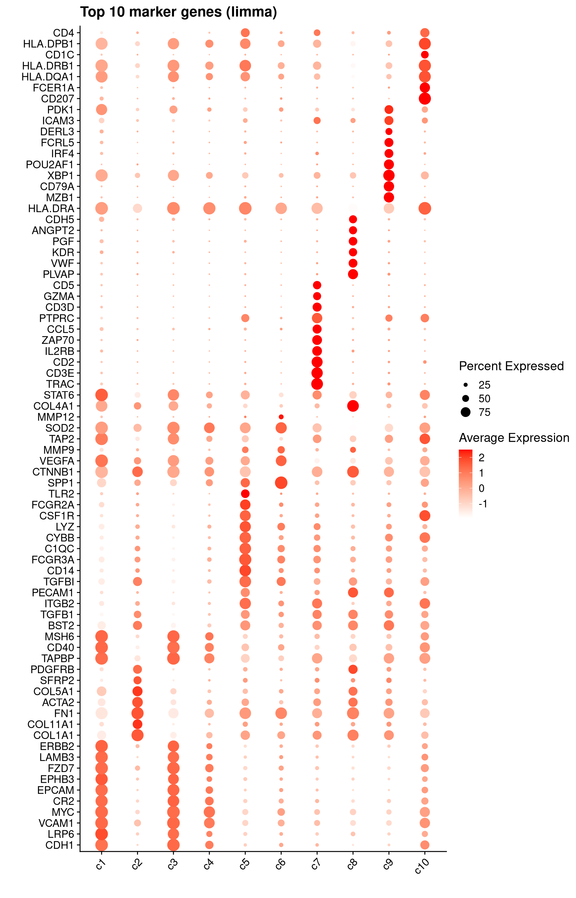
| Version | Author | Date |
|---|---|---|
| ae17c0e | Melody | 2026-01-22 |
Wilcoxon Rank Sum Test
The FindAllMarkers function applies a Wilcoxon Rank Sum
test to detect genes with cluster-specific expression shifts. Only
positive markers (upregulated genes) were retained using a log
fold-change threshold of 0.1.
cm <- assay(se, "counts")
hbm_seu<-CreateSeuratObject(counts = cm,
project = "hbreast")
Idents(hbm_seu) <- cluster_info[match(colnames(hbm_seu),
cluster_info$cell_id),"cluster"]
hbm_seu <- NormalizeData(hbm_seu, verbose = FALSE,
normalization.method = "LogNormalize")
hbm_seu <- FindVariableFeatures(hbm_seu, selection.method = "vst",
nfeatures = 1000, verbose = FALSE)
hbm_seu <- ScaleData(hbm_seu, verbose = FALSE)
seu_markers <- FindAllMarkers(hbm_seu, only.pos = TRUE,logfc.threshold = 0.1)
saveRDS(seu_markers, here(gdata,paste0(data_nm, "_seu_markers.Rds")))
saveRDS(hlc_seu, here(gdata,paste0(data_nm, "_seu.Rds")))FM_result= readRDS(here(gdata,paste0(data_nm, "_seu_markers.Rds")))
# load generated data (see code above for how they were created)
FM_result$cluster <- factor(FM_result$cluster,
levels = cluster_names)
top_mg <- FM_result %>%
group_by(cluster) %>%
arrange(desc(avg_log2FC), .by_group = TRUE) %>%
slice_max(order_by = avg_log2FC, n = 10) %>%
select(cluster, gene, avg_log2FC)
p1<-DotPlot(seu, features = unique(top_mg$gene)) +
scale_colour_gradient(low = "white", high = "red") +
coord_flip()+
theme(axis.text.x = element_text(angle = 45, hjust = 1, vjust = 1))+
labs(title = "Top 10 marker genes (WRS)", x="", y="")
p1
# # Combine into a new dataframe for LaTeX output
# output_data <- do.call(rbind, lapply(cluster_names, function(cl) {
# subset <- top_mg[top_mg$cluster == cl, ]
# sorted_subset <- subset[order(-subset$avg_log2FC), ]
# gene_list <- paste(sorted_subset$gene, "(", round(sorted_subset$avg_log2FC, 2), ")", sep="", collapse=", ")
#
# return(data.frame(Cluster = cl, Genes = gene_list))
# }))
# latex_table <- xtable(output_data, caption="Detected marker genes for each cluster by FindMarkers")
# print.xtable(latex_table, include.rownames = FALSE, hline.after = c(-1, 0, nrow(output_data)), comment = FALSE)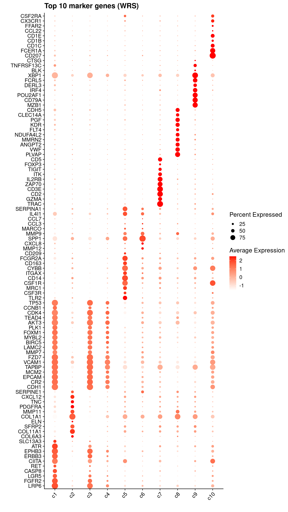
| Version | Author | Date |
|---|---|---|
| ae17c0e | Melody | 2026-01-22 |
Comparison of marker gene detection methods
Cumulative rank plot
We compared the performance of different marker detection methods — jazzPanda (linear modelling and correlation), limma, and Seurat’s Wilcoxon Rank Sum test -by evaluating the cumulative average spatial correlation between ranked marker genes and their corresponding target clusters at the spatial vector level.
Spatially informed jazzPanda methods prioritize genes with stronger spatial coherence in most clusters, especially c2, c5, c7, and c8, while traditional non-spatial approaches (Wilcoxon, limma) tend to accumulate high-correlation genes later or not at all.
plot_lst=list()
cor_M = cor(sv_lst$gene_mt,
sv_lst$cluster_mt[, cluster_names],
method = "spearman")
Idents(seu)=cluster_info$cluster[match(colnames(seu), cluster_info$cell_id)]
for (cl in cluster_names){
fm_cl=FindMarkers(seu, ident.1 = cl, only.pos = TRUE,
logfc.threshold = 0.1)
fm_cl = fm_cl[fm_cl$p_val_adj<0.05, ]
fm_cl = fm_cl[order(fm_cl$avg_log2FC, decreasing = TRUE),]
to_plot_fm =row.names(fm_cl)
if (length(to_plot_fm)>0){
FM_pt =FM_pt = data.frame("name"=to_plot_fm,"rk"= 1:length(to_plot_fm),
"y"= get_cmr_ma(to_plot_fm,cor_M = cor_M, cl = cl),
"type"="Wilcoxon Rank Sum Test")
}else{
FM_pt <- data.frame(name = character(0), rk = integer(0),
y= numeric(0), type = character(0))
}
limma_cl<-topTable(fit.cont,coef=cl,p.value = 0.05, n=Inf, sort.by = "p")
limma_cl = limma_cl[limma_cl$logFC>0, ]
to_plot_lm = row.names(limma_cl)
if (length(to_plot_lm)>0){
limma_pt = data.frame("name"=to_plot_lm,"rk"= 1:length(to_plot_lm),
"y"= get_cmr_ma(to_plot_lm,cor_M = cor_M, cl = cl),
"type"="limma")
}else{
limma_pt <- data.frame(name = character(0), rk = integer(0),
y= numeric(0), type = character(0))
}
obs_cutoff = quantile(obs_corr[, cl], 0.75)
perm_cl=intersect(row.names(perm_res[perm_res[,cl]<0.05,]),
row.names(obs_corr[obs_corr[, cl]>obs_cutoff,]))
if (length(perm_cl) > 0) {
rounded_val=signif(as.numeric(obs_corr[perm_cl,cl]), digits = 3)
roudned_pval=signif(as.numeric(perm_res[perm_cl,cl]), digits = 3)
perm_sorted = as.data.frame(cbind(gene=perm_cl, value=rounded_val, pval=roudned_pval))
perm_sorted$value = as.numeric(perm_sorted$value)
perm_sorted$pval = as.numeric(perm_sorted$pval)
perm_sorted=perm_sorted[order(-perm_sorted$pval,
perm_sorted$value,
decreasing = TRUE),]
corr_pt = data.frame("name"=perm_sorted$gene,"rk"= 1:length(perm_sorted$gene),
"y"= get_cmr_ma(perm_sorted$gene,cor_M = cor_M, cl = cl),
"type"="jazzPanda-correlation")
} else {
corr_pt <-data.frame(name = character(0), rk = integer(0),
y= numeric(0), type = character(0))
}
lasso_sig = jazzPanda_res[jazzPanda_res$top_cluster==cl,]
if (nrow(lasso_sig) > 0) {
lasso_sig <- lasso_sig[order(lasso_sig$glm_coef, decreasing = TRUE), ]
lasso_pt = data.frame("name"=lasso_sig$gene,"rk"= 1:nrow(lasso_sig),
"y"= get_cmr_ma(lasso_sig$gene,cor_M = cor_M, cl = cl),
"type"="jazzPanda-glm")
} else {
lasso_pt <- data.frame(name = character(0), rk = integer(0),
y= numeric(0), type = character(0))
}
data_lst = rbind(limma_pt, FM_pt,corr_pt,lasso_pt)
data_lst$type <- factor(data_lst$type,
levels = c("jazzPanda-correlation" ,
"jazzPanda-glm",
"limma", "Wilcoxon Rank Sum Test"))
data_lst$rk = as.numeric(data_lst$rk)
p <-ggplot(data_lst, aes(x = rk, y = y, color = type)) +
geom_step(size = 0.8) + # type = "s"
scale_color_manual(values = c("jazzPanda-correlation" = "orange",
"jazzPanda-glm" = "red",
"limma" = "black",
"Wilcoxon Rank Sum Test" = "blue")) +
scale_x_continuous(limits = c(0, 50))+
labs(title = paste0("Cluster ",cl), x = "Rank of marker genes",
y = "Cumulative average correlation",
color = NULL) +
theme_classic(base_size = 12) +
theme(plot.title = element_text(hjust = 0.5),
axis.line = element_blank(),
panel.border = element_rect(color = "black",
fill = NA, linewidth = 1),
legend.position = "inside",
legend.position.inside = c(0.98, 0.02),
legend.justification = c("right", "bottom"),
legend.background = element_rect(color = "black",
fill = "white", linewidth = 0.5),
legend.box.background = element_rect(color = "black",
linewidth = 0.5)
)
plot_lst[[cl]] <- p
}
combined_plot <- wrap_plots(plot_lst, ncol =3)
combined_plot 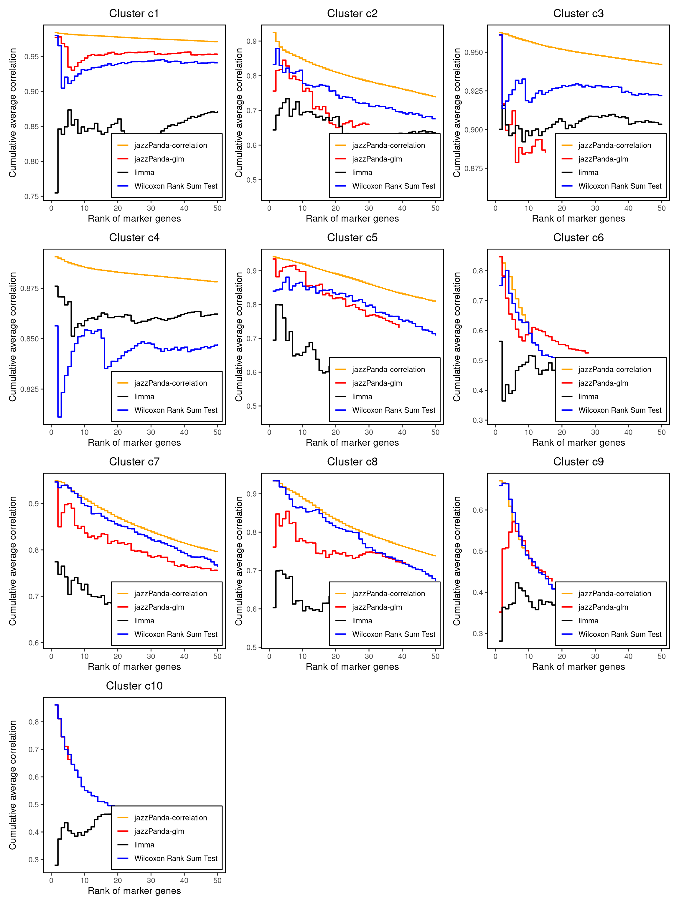
| Version | Author | Date |
|---|---|---|
| ae17c0e | Melody | 2026-01-22 |
Upset plot
We further visualized the overlap between marker genes detected by the four methods using UpSet plots for each cluster. Clusters c1, c5, c7 and c8 show the greatest overlap between methods, reflecting well-defined expression domains, whereas c4, c9, and c10 exhibit smaller intersections, consistent with weaker or more diffuse transcriptional contrast.
plot_lst=list()
for (cl in cluster_names){
#ct_nm = anno_df[anno_df$cluster==cl, "anno_name"]
findM_sig <- FM_result[FM_result$cluster==cl & FM_result$p_val_adj<0.05,"gene"]
limma_sig <- row.names(limma_dt[limma_dt[,cl]==1,])
lasso_cl <- jazzPanda_res[jazzPanda_res$top_cluster==cl, "gene"]
obs_cutoff = quantile(obs_corr[, cl], 0.75)
perm_cl<-intersect(row.names(perm_res[perm_res[,cl]<0.05,]),
row.names(obs_corr[obs_corr[, cl]>obs_cutoff,]))
df_mt <- as.data.frame(matrix(FALSE,nrow=nrow(jazzPanda_res),ncol=4))
row.names(df_mt) <- jazzPanda_res$gene
colnames(df_mt) <- c("jazzPanda-glm",
"jazzPanda-correlation",
"Wilcoxon Rank Sum Test","limma")
df_mt[findM_sig,"Wilcoxon Rank Sum Test"] <- TRUE
df_mt[limma_sig,"limma"] <- TRUE
df_mt[lasso_cl,"jazzPanda-glm"] <- TRUE
df_mt[perm_cl,"jazzPanda-correlation"] <- TRUE
df_mt$gene_name <- row.names(df_mt)
p = plot(upset(df_mt,
intersect=c("Wilcoxon Rank Sum Test", "limma",
"jazzPanda-correlation","jazzPanda-glm"),
wrap=TRUE, keep_empty_groups= FALSE, name="",
stripes='white',
sort_intersections_by ="cardinality", sort_sets= FALSE,min_degree=1,
set_sizes =(
upset_set_size()
+ theme(axis.title= element_blank(),
axis.ticks.y = element_blank(),
axis.text.y = element_blank())),
sort_intersections= "descending", warn_when_converting=FALSE,
warn_when_dropping_groups=TRUE,encode_sets=TRUE,
width_ratio=0.3, height_ratio=1/4)+
ggtitle(paste0("Cluster ",cl))+
theme(plot.title = element_text( size=15))
)
plot_lst[[cl]] <- p
}
combined_plot <- wrap_plots(plot_lst, ncol =3)
combined_plot 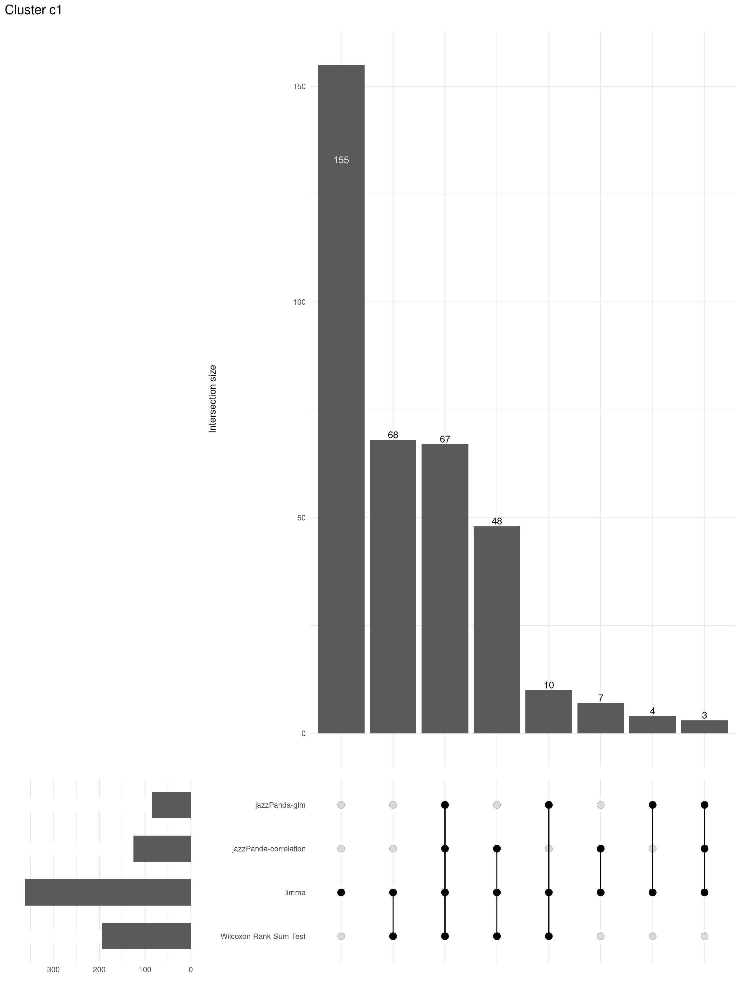
| Version | Author | Date |
|---|---|---|
| ae17c0e | Melody | 2026-01-22 |
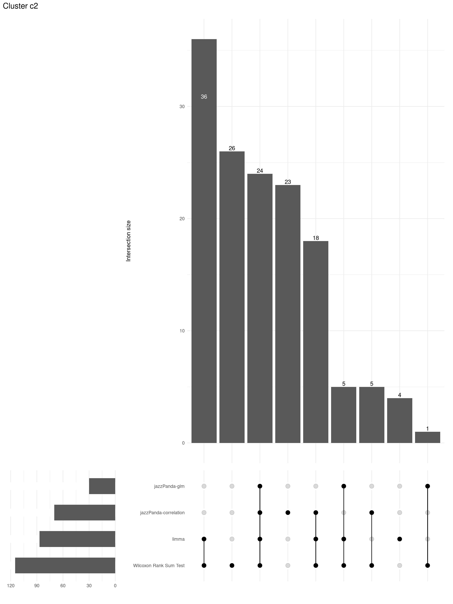
| Version | Author | Date |
|---|---|---|
| ae17c0e | Melody | 2026-01-22 |
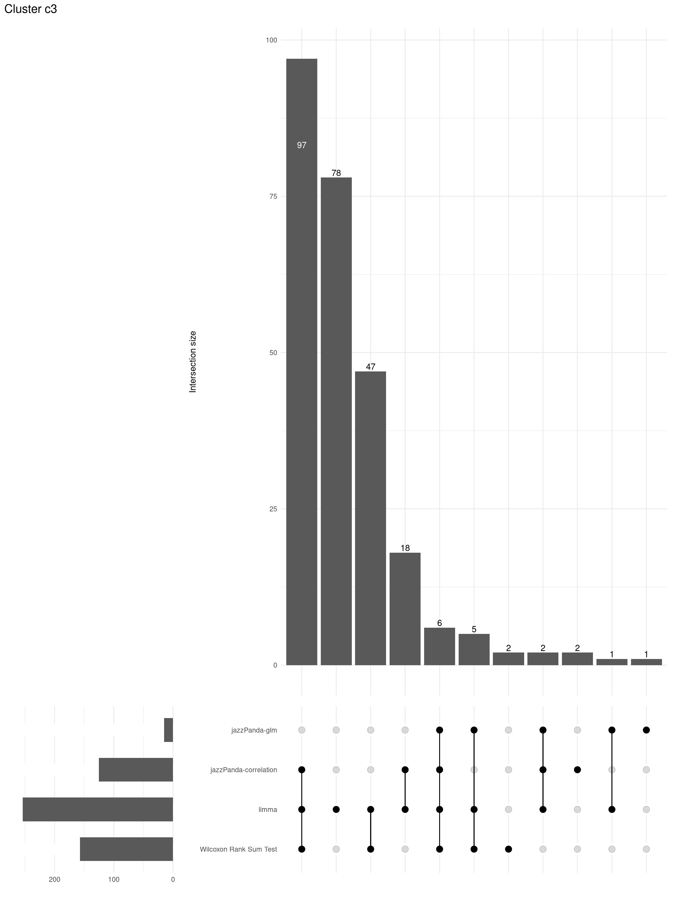
| Version | Author | Date |
|---|---|---|
| ae17c0e | Melody | 2026-01-22 |
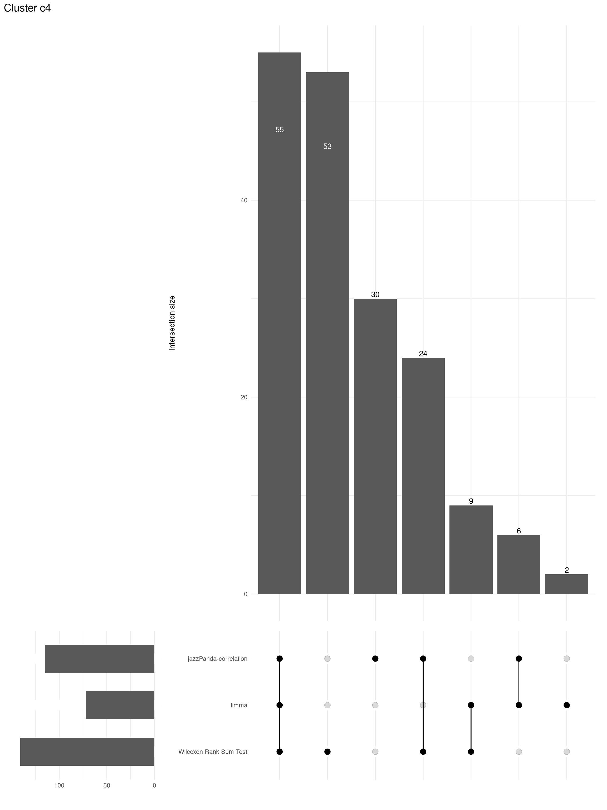
| Version | Author | Date |
|---|---|---|
| ae17c0e | Melody | 2026-01-22 |
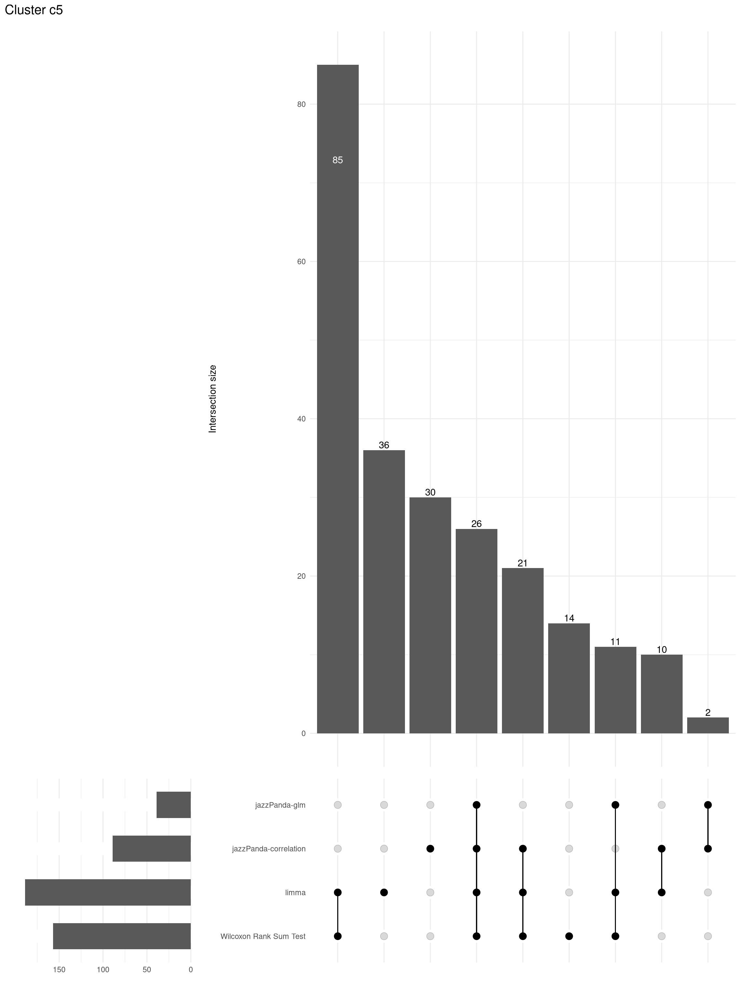
| Version | Author | Date |
|---|---|---|
| ae17c0e | Melody | 2026-01-22 |
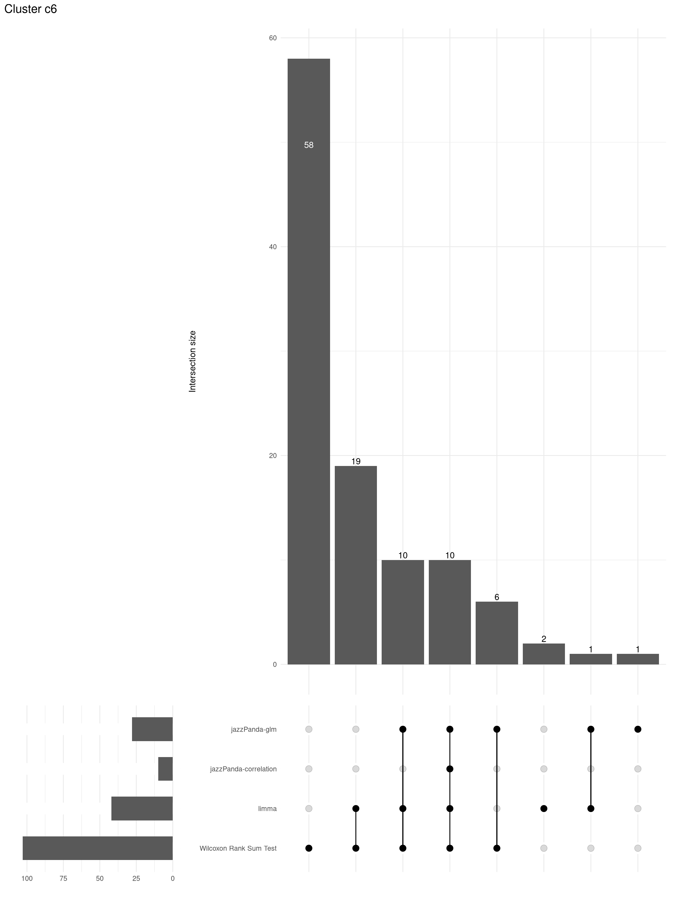
| Version | Author | Date |
|---|---|---|
| ae17c0e | Melody | 2026-01-22 |

| Version | Author | Date |
|---|---|---|
| ae17c0e | Melody | 2026-01-22 |
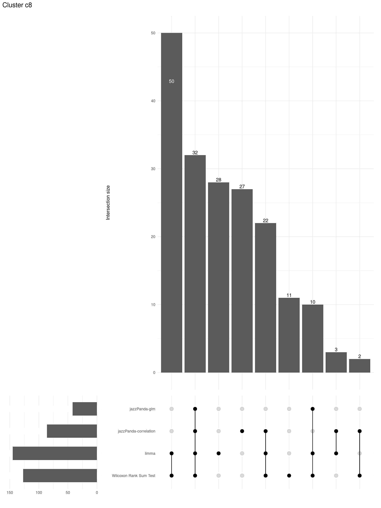
| Version | Author | Date |
|---|---|---|
| ae17c0e | Melody | 2026-01-22 |
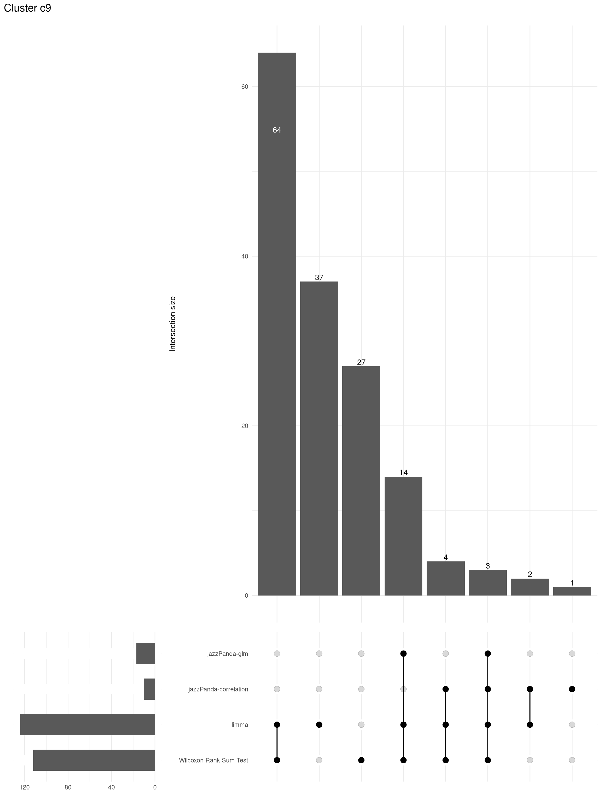
| Version | Author | Date |
|---|---|---|
| ae17c0e | Melody | 2026-01-22 |
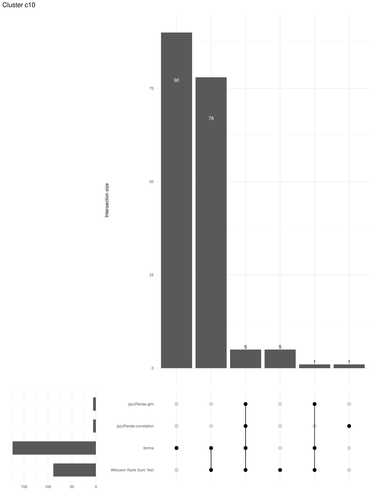
| Version | Author | Date |
|---|---|---|
| ae17c0e | Melody | 2026-01-22 |
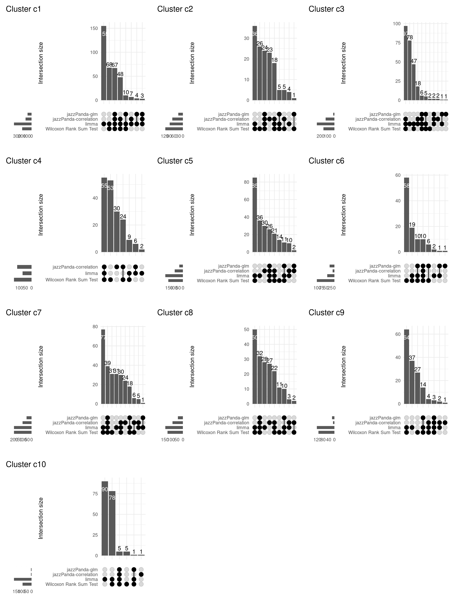
| Version | Author | Date |
|---|---|---|
| ae17c0e | Melody | 2026-01-22 |
Annotate cell type with top marker genes
anno_df <- data.frame(
cluster = cluster_names,
major_class = c(
"Epithelial tumor","Stromal","Epithelial tumor","Epithelial tumor",
"Myeloid","Myeloid","Lymphoid","Endothelial / Vascular","B lineage","Dendritic cell"
),
sub_class = c(
"Luminal-like / ERBB2-high","Cancer-associated fibroblast (CAF)","IFN-γ–licensed","Cycling (G2/M)",
"Tumor-associated macrophage (TAM)","Inflammatory/angiogenic TAM","T cells (activated)","Blood endothelial","Plasma cell / plasmablast","Langerhans / cDC2-like"
),
cell_type = c(
"Carcinoma—proliferative ERBB2/EGFR⁺",
"myCAF / iCAF hybrid",
"Carcinoma—MHC-II⁺ (APC-like)",
"Carcinoma—G2/M cycling",
"C1QC⁺ M2-like TAM",
"SPP1⁺ (osteopontin) TAM",
"Mixed CD4/CD8 with Treg features",
"Endothelium—PLVAP/KDR⁺",
"Plasma cells",
"CD207⁺ APC"
),
supporting_genes = c(
"EPCAM, ERBB2, ERBB3, EGFR, CDH1, MYC, FOXM1, MYBL2, MCM2, PCNA, CCNB1, LGR5, DKK1, FZD7, EPHB3",
"FN1, COL1A1, COL11A1, COL6A3, COL5A1, ACTA2, PDGFRA, TNC, FAP, CXCL12, IL6, SERPINE1, MFAP5, ELN, LOX",
"CDH1, EPCAM, HLA-DPB1/DRB1, CIITA, IDO1, TNFSF10, TGFB2, CEACAM1",
"BIRC5, PLK1, CCNB1, AURKA, AURKB, FOXM1, MYBL2, MCM2, TP53",
"C1QC, LYZ, FCGR3A, CD14, MRC1, CD163, MSR1, CSF1R, TREM2, LGALS9",
"SPP1, VEGFA, MMP9, MMP12, CXCL8, SERPINE1, TGFBI, ICAM1, ATF3",
"TRAC, CD3D/E/G, CD2, CD8A, GZMA/H/K, NKG7, CXCR3, TIGIT, ICOS, FOXP3, CCR7, TBX21, EOMES",
"PECAM1, VWF, CDH5, KDR, FLT1, CLDN5, PLVAP, MMRN2, ANGPT2, PGF, CLEC14A",
"XBP1, MZB1, IRF4, POU2AF1, CD79A/B, DERL3, FCRL5",
"CD207, FCER1A, CD1C, CD1B/E, CCL22, CSF1R"
),
notes = c(
"Luminal-like/HER2-high epithelial tumor with strong proliferation and WNT cues.",
"Mixed myCAF/iCAF phenotype; ECM deposition and inflammatory signaling coexist.",
"IFN-γ–induced antigen presentation by tumor cells; epithelial identity preserved.",
"Mitotic (G2/M) program dominates; classic cycling-tumor signature.",
"Immunoregulatory TAMs with M2-like polarization; chemokine-rich.",
"Angiogenic/remodeling TAMs; SPP1/VEGFA/MMP axis.",
"Activated T cells with cytotoxic and Treg subsets co-enriched.",
"Activated tumor endothelium; tip/stalk features (PLVAP/ANGPT2).",
"Canonical plasma cell program; minor contamination unlikely to change call.",
"Langerin+ dendritic cells bridging cDC2/Langerhans features."
),
confidence = c("High","High","High","High","High","High",
"Medium","High","High","High"),
anno_name = c("Tumor_Luminal_ERBB2",
"CAF_Mixed",
"Tumor_IFNg_APC",
"Tumor_Cycling_G2M",
"TAM_C1QC",
"TAM_SPP1",
"Tcell_Activated",
"Endo_Blood",
"Plasma",
"DC_Langerhans_cDC2"),
stringsAsFactors = FALSE
)
anno_df cluster major_class sub_class
1 c1 Epithelial tumor Luminal-like / ERBB2-high
2 c2 Stromal Cancer-associated fibroblast (CAF)
3 c3 Epithelial tumor IFN-γ–licensed
4 c4 Epithelial tumor Cycling (G2/M)
5 c5 Myeloid Tumor-associated macrophage (TAM)
6 c6 Myeloid Inflammatory/angiogenic TAM
7 c7 Lymphoid T cells (activated)
8 c8 Endothelial / Vascular Blood endothelial
9 c9 B lineage Plasma cell / plasmablast
10 c10 Dendritic cell Langerhans / cDC2-like
cell_type
1 Carcinoma—proliferative ERBB2/EGFR⁺
2 myCAF / iCAF hybrid
3 Carcinoma—MHC-II⁺ (APC-like)
4 Carcinoma—G2/M cycling
5 C1QC⁺ M2-like TAM
6 SPP1⁺ (osteopontin) TAM
7 Mixed CD4/CD8 with Treg features
8 Endothelium—PLVAP/KDR⁺
9 Plasma cells
10 CD207⁺ APC
supporting_genes
1 EPCAM, ERBB2, ERBB3, EGFR, CDH1, MYC, FOXM1, MYBL2, MCM2, PCNA, CCNB1, LGR5, DKK1, FZD7, EPHB3
2 FN1, COL1A1, COL11A1, COL6A3, COL5A1, ACTA2, PDGFRA, TNC, FAP, CXCL12, IL6, SERPINE1, MFAP5, ELN, LOX
3 CDH1, EPCAM, HLA-DPB1/DRB1, CIITA, IDO1, TNFSF10, TGFB2, CEACAM1
4 BIRC5, PLK1, CCNB1, AURKA, AURKB, FOXM1, MYBL2, MCM2, TP53
5 C1QC, LYZ, FCGR3A, CD14, MRC1, CD163, MSR1, CSF1R, TREM2, LGALS9
6 SPP1, VEGFA, MMP9, MMP12, CXCL8, SERPINE1, TGFBI, ICAM1, ATF3
7 TRAC, CD3D/E/G, CD2, CD8A, GZMA/H/K, NKG7, CXCR3, TIGIT, ICOS, FOXP3, CCR7, TBX21, EOMES
8 PECAM1, VWF, CDH5, KDR, FLT1, CLDN5, PLVAP, MMRN2, ANGPT2, PGF, CLEC14A
9 XBP1, MZB1, IRF4, POU2AF1, CD79A/B, DERL3, FCRL5
10 CD207, FCER1A, CD1C, CD1B/E, CCL22, CSF1R
notes
1 Luminal-like/HER2-high epithelial tumor with strong proliferation and WNT cues.
2 Mixed myCAF/iCAF phenotype; ECM deposition and inflammatory signaling coexist.
3 IFN-γ–induced antigen presentation by tumor cells; epithelial identity preserved.
4 Mitotic (G2/M) program dominates; classic cycling-tumor signature.
5 Immunoregulatory TAMs with M2-like polarization; chemokine-rich.
6 Angiogenic/remodeling TAMs; SPP1/VEGFA/MMP axis.
7 Activated T cells with cytotoxic and Treg subsets co-enriched.
8 Activated tumor endothelium; tip/stalk features (PLVAP/ANGPT2).
9 Canonical plasma cell program; minor contamination unlikely to change call.
10 Langerin+ dendritic cells bridging cDC2/Langerhans features.
confidence anno_name
1 High Tumor_Luminal_ERBB2
2 High CAF_Mixed
3 High Tumor_IFNg_APC
4 High Tumor_Cycling_G2M
5 High TAM_C1QC
6 High TAM_SPP1
7 Medium Tcell_Activated
8 High Endo_Blood
9 High Plasma
10 High DC_Langerhans_cDC2sessionInfo()R version 4.5.1 (2025-06-13)
Platform: x86_64-pc-linux-gnu
Running under: Red Hat Enterprise Linux 9.3 (Plow)
Matrix products: default
BLAS: /stornext/System/data/software/rhel/9/base/tools/R/4.5.1/lib64/R/lib/libRblas.so
LAPACK: /stornext/System/data/software/rhel/9/base/tools/R/4.5.1/lib64/R/lib/libRlapack.so; LAPACK version 3.12.1
locale:
[1] LC_CTYPE=en_AU.UTF-8 LC_NUMERIC=C
[3] LC_TIME=en_AU.UTF-8 LC_COLLATE=en_AU.UTF-8
[5] LC_MONETARY=en_AU.UTF-8 LC_MESSAGES=en_AU.UTF-8
[7] LC_PAPER=en_AU.UTF-8 LC_NAME=C
[9] LC_ADDRESS=C LC_TELEPHONE=C
[11] LC_MEASUREMENT=en_AU.UTF-8 LC_IDENTIFICATION=C
time zone: Australia/Melbourne
tzcode source: system (glibc)
attached base packages:
[1] stats4 stats graphics grDevices utils datasets methods
[8] base
other attached packages:
[1] harmony_1.2.3 Rcpp_1.1.0
[3] Banksy_1.4.0 dotenv_1.0.3
[5] corrplot_0.95 xtable_1.8-4
[7] here_1.0.1 limma_3.64.1
[9] RColorBrewer_1.1-3 patchwork_1.3.1
[11] gridExtra_2.3 ggrepel_0.9.6
[13] ComplexUpset_1.3.3 caret_7.0-1
[15] lattice_0.22-7 glmnet_4.1-10
[17] Matrix_1.7-3 tidyr_1.3.1
[19] dplyr_1.1.4 data.table_1.17.8
[21] ggplot2_3.5.2 Seurat_5.3.0
[23] SeuratObject_5.1.0 sp_2.2-0
[25] SpatialExperiment_1.18.1 SingleCellExperiment_1.30.1
[27] SummarizedExperiment_1.38.1 Biobase_2.68.0
[29] GenomicRanges_1.60.0 GenomeInfoDb_1.44.2
[31] IRanges_2.42.0 S4Vectors_0.46.0
[33] BiocGenerics_0.54.0 generics_0.1.4
[35] MatrixGenerics_1.20.0 matrixStats_1.5.0
[37] jazzPanda_0.2.4
loaded via a namespace (and not attached):
[1] RcppHungarian_0.3 RcppAnnoy_0.0.22 splines_4.5.1
[4] later_1.4.2 tibble_3.3.0 polyclip_1.10-7
[7] hardhat_1.4.2 pROC_1.19.0.1 rpart_4.1.24
[10] fastDummies_1.7.5 lifecycle_1.0.4 aricode_1.0.3
[13] rprojroot_2.1.0 globals_0.18.0 MASS_7.3-65
[16] magrittr_2.0.3 plotly_4.11.0 sass_0.4.10
[19] rmarkdown_2.29 jquerylib_0.1.4 yaml_2.3.10
[22] httpuv_1.6.16 sctransform_0.4.2 spam_2.11-1
[25] spatstat.sparse_3.1-0 reticulate_1.43.0 cowplot_1.2.0
[28] pbapply_1.7-4 lubridate_1.9.4 abind_1.4-8
[31] Rtsne_0.17 presto_1.0.0 purrr_1.1.0
[34] BumpyMatrix_1.16.0 nnet_7.3-20 ipred_0.9-15
[37] git2r_0.36.2 lava_1.8.1 GenomeInfoDbData_1.2.14
[40] irlba_2.3.5.1 listenv_0.9.1 spatstat.utils_3.1-5
[43] goftest_1.2-3 RSpectra_0.16-2 spatstat.random_3.4-1
[46] fitdistrplus_1.2-4 parallelly_1.45.1 codetools_0.2-20
[49] DelayedArray_0.34.1 tidyselect_1.2.1 shape_1.4.6.1
[52] UCSC.utils_1.4.0 farver_2.1.2 spatstat.explore_3.5-2
[55] jsonlite_2.0.0 progressr_0.15.1 ggridges_0.5.6
[58] survival_3.8-3 iterators_1.0.14 dbscan_1.2.2
[61] foreach_1.5.2 tools_4.5.1 ica_1.0-3
[64] glue_1.8.0 prodlim_2025.04.28 SparseArray_1.8.1
[67] xfun_0.52 withr_3.0.2 fastmap_1.2.0
[70] digest_0.6.37 timechange_0.3.0 R6_2.6.1
[73] mime_0.13 colorspace_2.1-1 scattermore_1.2
[76] sccore_1.0.6 tensor_1.5.1 spatstat.data_3.1-8
[79] hexbin_1.28.5 recipes_1.3.1 class_7.3-23
[82] httr_1.4.7 htmlwidgets_1.6.4 S4Arrays_1.8.1
[85] whisker_0.4.1 uwot_0.2.3 ModelMetrics_1.2.2.2
[88] pkgconfig_2.0.3 gtable_0.3.6 timeDate_4041.110
[91] workflowr_1.7.1 lmtest_0.9-40 XVector_0.48.0
[94] htmltools_0.5.8.1 dotCall64_1.2 scales_1.4.0
[97] png_0.1-8 gower_1.0.2 spatstat.univar_3.1-4
[100] knitr_1.50 reshape2_1.4.4 rjson_0.2.23
[103] nlme_3.1-168 cachem_1.1.0 zoo_1.8-14
[106] stringr_1.5.1 KernSmooth_2.23-26 parallel_4.5.1
[109] miniUI_0.1.2 pillar_1.11.0 grid_4.5.1
[112] vctrs_0.6.5 RANN_2.6.2 promises_1.3.3
[115] cluster_2.1.8.1 evaluate_1.0.4 magick_2.8.7
[118] cli_3.6.5 compiler_4.5.1 rlang_1.1.6
[121] crayon_1.5.3 future.apply_1.20.0 labeling_0.4.3
[124] mclust_6.1.1 plyr_1.8.9 fs_1.6.6
[127] stringi_1.8.7 viridisLite_0.4.2 deldir_2.0-4
[130] BiocParallel_1.42.1 lazyeval_0.2.2 spatstat.geom_3.5-0
[133] RcppHNSW_0.6.0 future_1.67.0 statmod_1.5.0
[136] shiny_1.11.1 ROCR_1.0-11 leidenAlg_1.1.5
[139] igraph_2.1.4 bslib_0.9.0
sessionInfo()R version 4.5.1 (2025-06-13)
Platform: x86_64-pc-linux-gnu
Running under: Red Hat Enterprise Linux 9.3 (Plow)
Matrix products: default
BLAS: /stornext/System/data/software/rhel/9/base/tools/R/4.5.1/lib64/R/lib/libRblas.so
LAPACK: /stornext/System/data/software/rhel/9/base/tools/R/4.5.1/lib64/R/lib/libRlapack.so; LAPACK version 3.12.1
locale:
[1] LC_CTYPE=en_AU.UTF-8 LC_NUMERIC=C
[3] LC_TIME=en_AU.UTF-8 LC_COLLATE=en_AU.UTF-8
[5] LC_MONETARY=en_AU.UTF-8 LC_MESSAGES=en_AU.UTF-8
[7] LC_PAPER=en_AU.UTF-8 LC_NAME=C
[9] LC_ADDRESS=C LC_TELEPHONE=C
[11] LC_MEASUREMENT=en_AU.UTF-8 LC_IDENTIFICATION=C
time zone: Australia/Melbourne
tzcode source: system (glibc)
attached base packages:
[1] stats4 stats graphics grDevices utils datasets methods
[8] base
other attached packages:
[1] harmony_1.2.3 Rcpp_1.1.0
[3] Banksy_1.4.0 dotenv_1.0.3
[5] corrplot_0.95 xtable_1.8-4
[7] here_1.0.1 limma_3.64.1
[9] RColorBrewer_1.1-3 patchwork_1.3.1
[11] gridExtra_2.3 ggrepel_0.9.6
[13] ComplexUpset_1.3.3 caret_7.0-1
[15] lattice_0.22-7 glmnet_4.1-10
[17] Matrix_1.7-3 tidyr_1.3.1
[19] dplyr_1.1.4 data.table_1.17.8
[21] ggplot2_3.5.2 Seurat_5.3.0
[23] SeuratObject_5.1.0 sp_2.2-0
[25] SpatialExperiment_1.18.1 SingleCellExperiment_1.30.1
[27] SummarizedExperiment_1.38.1 Biobase_2.68.0
[29] GenomicRanges_1.60.0 GenomeInfoDb_1.44.2
[31] IRanges_2.42.0 S4Vectors_0.46.0
[33] BiocGenerics_0.54.0 generics_0.1.4
[35] MatrixGenerics_1.20.0 matrixStats_1.5.0
[37] jazzPanda_0.2.4
loaded via a namespace (and not attached):
[1] RcppHungarian_0.3 RcppAnnoy_0.0.22 splines_4.5.1
[4] later_1.4.2 tibble_3.3.0 polyclip_1.10-7
[7] hardhat_1.4.2 pROC_1.19.0.1 rpart_4.1.24
[10] fastDummies_1.7.5 lifecycle_1.0.4 aricode_1.0.3
[13] rprojroot_2.1.0 globals_0.18.0 MASS_7.3-65
[16] magrittr_2.0.3 plotly_4.11.0 sass_0.4.10
[19] rmarkdown_2.29 jquerylib_0.1.4 yaml_2.3.10
[22] httpuv_1.6.16 sctransform_0.4.2 spam_2.11-1
[25] spatstat.sparse_3.1-0 reticulate_1.43.0 cowplot_1.2.0
[28] pbapply_1.7-4 lubridate_1.9.4 abind_1.4-8
[31] Rtsne_0.17 presto_1.0.0 purrr_1.1.0
[34] BumpyMatrix_1.16.0 nnet_7.3-20 ipred_0.9-15
[37] git2r_0.36.2 lava_1.8.1 GenomeInfoDbData_1.2.14
[40] irlba_2.3.5.1 listenv_0.9.1 spatstat.utils_3.1-5
[43] goftest_1.2-3 RSpectra_0.16-2 spatstat.random_3.4-1
[46] fitdistrplus_1.2-4 parallelly_1.45.1 codetools_0.2-20
[49] DelayedArray_0.34.1 tidyselect_1.2.1 shape_1.4.6.1
[52] UCSC.utils_1.4.0 farver_2.1.2 spatstat.explore_3.5-2
[55] jsonlite_2.0.0 progressr_0.15.1 ggridges_0.5.6
[58] survival_3.8-3 iterators_1.0.14 dbscan_1.2.2
[61] foreach_1.5.2 tools_4.5.1 ica_1.0-3
[64] glue_1.8.0 prodlim_2025.04.28 SparseArray_1.8.1
[67] xfun_0.52 withr_3.0.2 fastmap_1.2.0
[70] digest_0.6.37 timechange_0.3.0 R6_2.6.1
[73] mime_0.13 colorspace_2.1-1 scattermore_1.2
[76] sccore_1.0.6 tensor_1.5.1 spatstat.data_3.1-8
[79] hexbin_1.28.5 recipes_1.3.1 class_7.3-23
[82] httr_1.4.7 htmlwidgets_1.6.4 S4Arrays_1.8.1
[85] whisker_0.4.1 uwot_0.2.3 ModelMetrics_1.2.2.2
[88] pkgconfig_2.0.3 gtable_0.3.6 timeDate_4041.110
[91] workflowr_1.7.1 lmtest_0.9-40 XVector_0.48.0
[94] htmltools_0.5.8.1 dotCall64_1.2 scales_1.4.0
[97] png_0.1-8 gower_1.0.2 spatstat.univar_3.1-4
[100] knitr_1.50 reshape2_1.4.4 rjson_0.2.23
[103] nlme_3.1-168 cachem_1.1.0 zoo_1.8-14
[106] stringr_1.5.1 KernSmooth_2.23-26 parallel_4.5.1
[109] miniUI_0.1.2 pillar_1.11.0 grid_4.5.1
[112] vctrs_0.6.5 RANN_2.6.2 promises_1.3.3
[115] cluster_2.1.8.1 evaluate_1.0.4 magick_2.8.7
[118] cli_3.6.5 compiler_4.5.1 rlang_1.1.6
[121] crayon_1.5.3 future.apply_1.20.0 labeling_0.4.3
[124] mclust_6.1.1 plyr_1.8.9 fs_1.6.6
[127] stringi_1.8.7 viridisLite_0.4.2 deldir_2.0-4
[130] BiocParallel_1.42.1 lazyeval_0.2.2 spatstat.geom_3.5-0
[133] RcppHNSW_0.6.0 future_1.67.0 statmod_1.5.0
[136] shiny_1.11.1 ROCR_1.0-11 leidenAlg_1.1.5
[139] igraph_2.1.4 bslib_0.9.0